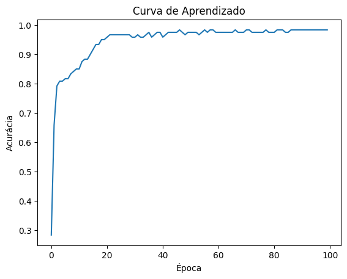

import numpy as np
class Perceptron:
def __init__(self, num_features, learning_rate=0.01, epochs=100):
self.num_features = num_features
self.learning_rate = learning_rate
self.epochs = epochs
self.weights = np.random.rand(num_features + 1) # initial random weights +1 for the bias term
self.initialWeights = self.weights
print(f'[INFO] \tRandom initial weights: {self.weights}')
def predict(self, inputs): # activation function
summation = np.dot(inputs, self.weights[1:]) + self.weights[0] # activation potential: u
return 1 if summation >= 0 else -1 # Use of the bipolar step function
def train(self, training_data, labels):
hasError = True
for epoch in range(self.epochs):
#print(f'[INFO] Epoch: {epoch}')
hasError = False
for inputs, label in zip(training_data, labels):
prediction = self.predict(inputs) # return of activation function: y
if prediction != label:
hasError = True
update = self.learning_rate * (label - prediction) # eta * (dk - y)
self.weights[1:] += update * inputs # update weights: w <- w + eta * (dk - y) * xk
self.weights[0] += update # update activation limiar: tetha <- tetha + eta * (dk - y)
#print(f'[INFO] Weights: {self.weights}')
if hasError == False:
print(f'[INFO] \tConverged after: {epoch + 1} epochs.')
break
print(f'[INFO] \tFinal weights: {self.weights}')
print(f'[INFO] \tTotal of epochs: {epoch + 1}')
def getInitialWeights(self):
return self.initialWeights
def getFinalWeights(self):
return self.weightsInstituto Federal de Educação, Ciência e Tecnologia de Minas Gerais - Campus Ouro Preto
Especialização em Inteligência Artificial
Disciplina: Redes Neurais e Aprendizado Profundo
Profs.: Dr. Agnaldo José da Rocha Reis
Alunos: Fernando dos Santos Alves Fernandes, Ivanete Fátima de Azevedo e Marco Antônio do Nascimento ****
- O que é inteligência para você(s)?
Entendemos a inteligência como uma combinação de conceitos como a sabedoria, o conhecimento, a transformação da mente e a virtude. Para nós, a sabedoria seria a capacidade de compreensão do indivíduo, dado uma informação transmitida a ele. O conhecimento pode ser visto como a consciência adquirida por meio da experiência, estudo ou introspecção, capacitando uma pessoa a interpretar e agir no mundo. A transformação da mente é a capacidade de uma pessoa de mudar seus pensamentos e perspectivas ao longo do tempo, sendo assim uma busca constante por um entendimento de evolução intelectual. Por fim temos a virtude que é a capacidade do indivíduo em buscar a excelência moral e ética, não apenas a excelência intelectual. Isso posto, a inteligência, para nós, não é apenas uma capacidade intelectual do indivíduo, mas também envolve a busca por virtude e a capacidade de transformação da mente. O conceito de inteligência também pode ser associado à capacidade humana de tomar decisões e resolver problemas; à capacidade de se adaptar a diferentes situações; à capacidade de aprender algo novo, a partir da detecção de padrões.
- Em sua opinião (ou na do grupo), o que aconteceria se alguém descobrisse como implementar uma IA mais abrangente (e.g., AGI) em um robô?
Em algumas tarefas, as máquinas já são capazes de ter um desempenho semelhante ou melhor do que o ser humano, por exemplo, no processamento e análise de dados e imagens. De qualquer forma, os modelos de inteligência artificial atuais são capazes de resolver tarefas específicas. No momento em que for possível o desenvolvimento e implantação de uma IA mais abrangente em um robô, principalmente, se (ou quando) alcançarmos uma AGI (Artificial General Intelligence), para alguns pesquisadores, estaremos diante de um risco à raça humana; para outros, esse é o propósito das pesquisas em Inteligência Artificial. Acreditamos que a implementação de uma IA mais abrangente, como a AGI em robôs, representa uma potencial revolução para a sociedade, podendo causar avanços em diversas esferas, desde a automação industrial até aplicações médicas e pesquisa científica. Dentro da automação industrial, uma AGI poderia otimizar processos em setores variados, elevando eficiência na produção, logística e serviços. Na medicina, os benefícios seriam notáveis, com robôs utilizando IAG para diagnósticos mais precisos, execução de cirurgias complexas e até mesmo fornecimento de suporte emocional a pacientes. Contudo, diversos dilemas éticos podem surgir e demandam reflexões profundas sobre temas como responsabilidade, privacidade e acesso à tecnologia. Além disso, a regulamentação torna-se um ponto que merece atenção, dado que a sociedade deveria estabelecer diretrizes claras para o desenvolvimento e uso responsável da AGI, crucial para assegurar a segurança, transparência e conformidade ética. De todo modo, acreditamos que uma AGI deve ser vista como uma ferramenta para aprimorar capacidades humanas e não uma força substitutiva. Isso posto, precisamos interpretar esse dilema de forma cautelosa e ética, alinhada aos valores fundamentais da sociedade, para garantir que os benefícios da AGI sejam amplamente distribuídos, preservando o bem-estar humano numa era de transformação tecnológica.
- A partir da análise de um processo de destilação fracionada de petróleo observou-se que determinado óleo poderia ser classificado em duas classes de pureza {C1 e C2}, mediante a medição de três grandezas {x1, x2 e x3} que representam algumas das propriedades físico-químicas do óleo. Para tanto, pretende-se utilizar um perceptron para executar a classificação automática dessas duas classes. Assim, baseadas nas informações coletadas do processo, formou-se o conjunto de treinamento em anexo1, tomando por convenção o valor –1 para óleo pertencente à classe C1 e o valor +1 para óleo pertencente à classe C2.
Daí, pede-se:
- Execute dois treinamentos para a rede perceptron, inicializando-se o vetor de pesos em cada treinamento com valores aleatórios entre zero e um de tal forma que os elementos do vetor de pesos iniciais não sejam os mesmos.
print(f'\n[INFO] ###### Perceptron Implementation #######')
print(f'\n[INFO] Loading training dataset and labels...')
file = open('tab_treinamento1.dat', 'r')
results = list()
l = list()
for line in file:
columns = line.split()
columns = np.array(columns, dtype=float)
results.append(columns[:3])
l.append(columns[-1:])
training_data = np.array(results)
labels = np.array(l)
print(f'\t[INFO] OK!')
#training_data = np.array([[0.6508, 0.1097, 4.0009], [-1.4492, 0.8896, 4.4005], [2.085, 0.6876, 1.2071], [0.2626, 1.1476, 7.7985], [0.6418, 1.0234, 7.0427], [0.2569, 0.673, 8.3265], [1.1155, 0.6043, 7.4446], [0.0914, 0.3399, 7.0677], [0.0121, 0.5256, 4.6316], [-0.0429, 0.466, 5.4323], [0.434, 0.687, 8.2287], [0.2735, 1.0287, 7.1934], [0.4839, 0.4851, 7.485], [0.4089, -0.1267, 5.5019], [1.4391, 0.1614, 8.5843], [-0.9115, -0.1973, 2.1962], [0.3654, 1.0475, 7.4858], [0.2144, 0.7515, 7.1699], [0.2013, 1.0014, 6.5489], [0.6483, 0.2183, 5.8991], [-0.1147, 0.2242, 7.2435], [-0.797, 0.8795, 3.8762], [-1.0625, 0.6366, 2.4707], [0.5307, 0.1285, 5.6883], [-1.22, 0.7777, 1.7252], [0.3957, 0.1076, 5.6623], [-0.1013, 0.5989, 7.1812], [2.4482, 0.9455, 11.2095], [2.0149, 0.6192, 10.9263], [0.2012, 0.2611, 5.4631]])
#labels = np.array([-1, -1, -1, 1, 1, -1, 1, -1, 1, 1, -1, 1, -1, -1, -1, -1, 1, 1, 1, 1, -1, 1, 1, 1, 1, -1, -1, 1, -1, 1])
print(f'\n[INFO] Getting information about training dataset...')
print(f'[INFO] Training dataset: \n{training_data}')
print(f'[INFO] Labels of training dataset: \n{labels}')
[INFO] ###### Perceptron Implementation #######
[INFO] Loading training dataset and labels...
[INFO] OK!
[INFO] Getting information about training dataset...
[INFO] Training dataset:
[[-0.6508 0.1097 4.0009]
[-1.4492 0.8896 4.4005]
[ 2.085 0.6876 12.071 ]
[ 0.2626 1.1476 7.7985]
[ 0.6418 1.0234 7.0427]
[ 0.2569 0.673 8.3265]
[ 1.1155 0.6043 7.4446]
[ 0.0914 0.3399 7.0677]
[ 0.0121 0.5256 4.6316]
[-0.0429 0.466 5.4323]
[ 0.434 0.687 8.2287]
[ 0.2735 1.0287 7.1934]
[ 0.4839 0.4851 7.485 ]
[ 0.4089 -0.1267 5.5019]
[ 1.4391 0.1614 8.5843]
[-0.9115 -0.1973 2.1962]
[ 0.3654 1.0475 7.4858]
[ 0.2144 0.7515 7.1699]
[ 0.2013 1.0014 6.5489]
[ 0.6483 0.2183 5.8991]
[-0.1147 0.2242 7.2435]
[-0.797 0.8795 3.8762]
[-1.0625 0.6366 2.4707]
[ 0.5307 0.1285 5.6883]
[-1.22 0.7777 1.7252]
[ 0.3957 0.1076 5.6623]
[-0.1013 0.5989 7.1812]
[ 2.4482 0.9455 11.2095]
[ 2.0149 0.6192 10.9263]
[ 0.2012 0.2611 5.4631]]
[INFO] Labels of training dataset:
[[-1.]
[-1.]
[-1.]
[ 1.]
[ 1.]
[-1.]
[ 1.]
[-1.]
[ 1.]
[ 1.]
[-1.]
[ 1.]
[-1.]
[-1.]
[-1.]
[-1.]
[ 1.]
[ 1.]
[ 1.]
[ 1.]
[-1.]
[ 1.]
[ 1.]
[ 1.]
[ 1.]
[-1.]
[-1.]
[ 1.]
[-1.]
[ 1.]]# Creating a Perceptron
print(f'\n[INFO] Creating a Perceptron...')
number_of_epochs = 10000
perceptron1 = Perceptron(num_features=3, learning_rate=0.01, epochs=number_of_epochs)
print(f'[INFO] \tOK!')
[INFO] Creating a Perceptron...
[INFO] Random initial weights: [0.17736342 0.15638614 0.47744044 0.1209934 ]
[INFO] OK!# Training the perceptron 1
print(f'\n[INFO] Getting information about training dataset...')
print(f'[INFO] \tTraining dataset size = {training_data.shape[0]}')
print(f'[INFO] \tLabels size = {labels.shape[0]}')
print(f'[INFO] \tLimit of epochs: {number_of_epochs}')
print(f'\n[INFO] Training the Perceptron 1...')
perceptron1.train(training_data, labels)
initialWeights = perceptron1.getInitialWeights()
finalWeights = perceptron1.getFinalWeights()
print(f'\t[INFO] OK!')
[INFO] Getting information about training dataset...
[INFO] Training dataset size = 30
[INFO] Labels size = 30
[INFO] Limit of epochs: 10000
[INFO] Training the Perceptron 1...
[INFO] Converged after: 333 epochs.
[INFO] Final weights: [ 2.93736342 1.41135414 2.43657844 -0.7023866 ]
[INFO] Total of epochs: 333
[INFO] OK!# Creating a new Perceptron
print(f'\n[INFO] Creating a new Perceptron...')
number_of_epochs = 10000
perceptron2 = Perceptron(num_features=3, learning_rate=0.01, epochs=number_of_epochs)
print(f'[INFO] \tOK!')
[INFO] Creating a new Perceptron...
[INFO] Random initial weights: [0.44467875 0.60329962 0.69505087 0.33930767]
[INFO] OK!# Training the perceptron 2
print(f'\n[INFO] Getting information about training dataset...')
print(f'[INFO] \tTraining dataset size = {training_data.shape[0]}')
print(f'[INFO] \tLabels size = {labels.shape[0]}')
print(f'[INFO] \tLimit of epochs: {number_of_epochs}')
print(f'\n[INFO] Training the Perceptron 2...')
perceptron2.train(training_data, labels)
print(f'\t[INFO] OK!')
[INFO] Getting information about training dataset...
[INFO] Training dataset size = 30
[INFO] Labels size = 30
[INFO] Limit of epochs: 10000
[INFO] Training the Perceptron 2...
[INFO] Converged after: 386 epochs.
[INFO] Final weights: [ 3.06467875 1.55732162 2.47131887 -0.73088233]
[INFO] Total of epochs: 386
[INFO] OK!- Registre os resultados dos dois treinamentos na tabela a seguir:
| Treinamento | Vetor de Pesos Inicial | Vetor de Pesos Final | Número de Épocas | ||||||
| b | w1 | w2 | w3 | b | w1 | w2 | w3 | ||
| 1º (T1) | 0.1773634 | 0.15638614 | 0.47744044 | 0.1209934 | 2.93736342 | 1.41135414 | 2.43657844 | -0.7023866 | 333 |
| 2º (T1) | 0.44467875 | 0.15638614 | 0.69505087 | 0.33930767 | 3.06467875 | 1.55732162 | 2.47131887 | -0.73088233 | 386 |
Nota: os valores atuais dessa tabela se referem ao últimos treinamentos realizados. Caso os trechos de código acima sejam executados novamente, necessita-se atualizar a tabela.
- Após o treinamento do perceptron, aplique-o na classificação automática de novas amostras de óleo (ver arquivo tab_teste1.dat), indicando-se na tabela seguinte os resultados das saídas (Classes) referentes aos dois processos de treinamento realizados no item a.
# Testing dataset
# test_data = np.array([[0.6508, 0.1097, 4.0009], [-1.4492, 0.8896, 4.4005], [2.085, 0.6876, 1.2071], [0.2626, 1.1476, 7.7985], [0.6418, 1.0234, 7.0427], [0.2569, 0.673, 8.3265], [1.1155, 0.6043, 7.4446], [0.0914, 0.3399, 7.0677], [0.0121, 0.5256, 4.6316], [-0.0429, 0.466, 5.4323], [0.434, 0.687, 8.2287], [0.2735, 1.0287, 7.1934], [0.4839, 0.4851, 7.485], [0.4089, -0.1267, 5.5019], [1.4391, 0.1614, 8.5843], [-0.9115, -0.1973, 2.1962], [0.3654, 1.0475, 7.4858], [0.2144, 0.7515, 7.1699], [0.2013, 1.0014, 6.5489], [0.6483, 0.2183, 5.8991], [-0.1147, 0.2242, 7.2435], [-0.797, 0.8795, 3.8762], [-1.0625, 0.6366, 2.4707], [0.5307, 0.1285, 5.6883], [-1.22, 0.7777, 1.7252], [0.3957, 0.1076, 5.6623], [-0.1013, 0.5989, 7.1812], [2.4482, 0.9455, 11.2095], [2.0149, 0.6192, 10.9263], [0.2012, 0.2611, 5.4631]])
# Testing the perceptron
print(f'\n[INFO] Loading testing dataset...')
file = open('tab_teste1.dat', 'r')
results = list()
for line in file:
columns = line.split()
columns = np.array(columns, dtype=float)
results.append(columns[:])
testing_data = np.array(results)
print(f'\t[INFO] OK!')
print(f'\n[INFO] Getting information about testing dataset...')
print(f'[INFO] Testing dataset: \n{testing_data}')
# print(f'[INFO] \tTesting dataset size = {training_data.shape[0]}')
print(f'[INFO] \tTesting dataset size = {testing_data.shape[0]}')
[INFO] Loading testing dataset...
[INFO] OK!
[INFO] Getting information about testing dataset...
[INFO] Testing dataset:
[[-0.3565 0.062 5.9891]
[-0.7842 1.1267 5.5912]
[ 0.3012 0.5611 5.8234]
[ 0.7757 1.0648 8.0677]
[ 0.157 0.8028 6.304 ]
[-0.7014 1.0316 3.6005]
[ 0.3748 0.1536 6.1537]
[-0.692 0.9404 4.4058]
[-1.397 0.7141 4.9263]
[-1.8842 -0.2805 1.2548]]
[INFO] Testing dataset size = 10print(f'\n[INFO] Running testing data with Perceptron 1...')
# for inputs in training_data:
for inputs in testing_data:
result = perceptron1.predict(inputs)
print(f"[INFO] \tInput: {inputs} -> Output: {result}")
[INFO] Running testing data with Perceptron 1...
[INFO] Input: [-0.3565 0.062 5.9891] -> Output: -1
[INFO] Input: [-0.7842 1.1267 5.5912] -> Output: 1
[INFO] Input: [0.3012 0.5611 5.8234] -> Output: 1
[INFO] Input: [0.7757 1.0648 8.0677] -> Output: 1
[INFO] Input: [0.157 0.8028 6.304 ] -> Output: 1
[INFO] Input: [-0.7014 1.0316 3.6005] -> Output: 1
[INFO] Input: [0.3748 0.1536 6.1537] -> Output: -1
[INFO] Input: [-0.692 0.9404 4.4058] -> Output: 1
[INFO] Input: [-1.397 0.7141 4.9263] -> Output: -1
[INFO] Input: [-1.8842 -0.2805 1.2548] -> Output: -1print(f'\n[INFO] Running testing data with Perceptron 2...')
# for inputs in training_data:
for inputs in testing_data:
result = perceptron2.predict(inputs)
print(f"[INFO] \tInput: {inputs} -> Output: {result}")
[INFO] Running testing data with Perceptron 2...
[INFO] Input: [-0.3565 0.062 5.9891] -> Output: -1
[INFO] Input: [-0.7842 1.1267 5.5912] -> Output: 1
[INFO] Input: [0.3012 0.5611 5.8234] -> Output: 1
[INFO] Input: [0.7757 1.0648 8.0677] -> Output: 1
[INFO] Input: [0.157 0.8028 6.304 ] -> Output: 1
[INFO] Input: [-0.7014 1.0316 3.6005] -> Output: 1
[INFO] Input: [0.3748 0.1536 6.1537] -> Output: -1
[INFO] Input: [-0.692 0.9404 4.4058] -> Output: 1
[INFO] Input: [-1.397 0.7141 4.9263] -> Output: -1
[INFO] Input: [-1.8842 -0.2805 1.2548] -> Output: -1Tabela 2 - Resultados com as saídas das saída (classes) para os dados de teste (tab_teste1.dat):
| Amostra | x1 | x2 | x3 | y (T1) | y (T2) |
| 1 | -0.3565 | 0.0620 | 5.9891 | -1 | -1 |
| 2 | -0.7842 | 1.1267 | 5.5912 | 1 | 1 |
| 3 | 0.3012 | 0.5611 | 5.8234 | 1 | 1 |
| 4 | 0.7757 | 1.0648 | 8.0677 | 1 | 1 |
| 5 | 0.157 | 0.8028 | 6.304 | 1 | 1 |
| 6 | -0.7014 | 1.0316 | 3.6005 | 1 | 1 |
| 7 | 0.3748 | 0.1536 | 6.1537 | -1 | -1 |
| 8 | -0.692 | 0.9404 | 4.4058 | 1 | 1 |
| 9 | -1.397 | 0.7141 | 4.9263 | -1 | -1 |
| 10 | -1.8842 | -0.2805 | 1.2548 | -1 | -1 |
Nota: os valores atuais dessa tabela se referem ao últimos testes realizados. Caso os trechos de código acima sejam executados novamente, necessita-se atualizar a tabela.
- Explique por que o número de épocas de treinamento varia a cada vez que se executa o treinamento do perceptron.
O número de épocas necessárias para a convergência do processo de treinamento varia conforme os valores iniciais dos pesos e do limiar de ativação. Esses valores iniciais definem quão longe da fronteira de seperação o treinamento inicia o ajuste do modelo. Se os valores iniciais atribuídos aos pesos e ao limiar de ativação são definidos aleatoriamente, a cada execução do treinamento, o número de épocas para a convergência normalmente é diferente.
- Qual é a principal limitação do perceptron quando aplicado em problemas de classificação de padrões?
Os perceptrons são um tipo de rede neurais apropriada para tarefa de classificação de padrões em que as classes são linearmente separáveis. Por isso, para problemas não linearmente separáveis utilizando perceptrons, é necessário especificar um número máximo de épocas de treinamento.
- Um sistema de gerenciamento automático de controle de duas válvulas, situado a 500 metros de um processo industrial, envia um sinal codificado constituído de quatro grandezas {x1, x2, x3 e x4} que são necessárias para o ajuste de cada uma das válvulas. Conforme mostra a figura abaixo, a mesma via de comunicação é utilizada para acionamento de ambas as válvulas, sendo que o comutador localizado próximo das válvulas deve decidir se o sinal é para a válvula A ou B. Porém, durante a transmissão, os sinais sofrem interferências que alteram o conteúdo das informações transmitidas. Para resolver este problema, treinar-se-á uma rede ADALINE para classificar os sinais ruidosos, que informará ao sistema comutador se os dados devem ser encaminhados para o comando de ajuste da válvula A ou B. Assim, baseado nas medições dos sinais já com ruídos, formou-se o conjunto de treinamento em anexo2, tomando por convenção o valor –1 para os sinais que devem ser encaminhados para o ajuste da válvula A e o valor +1 se os mesmos devem ser enviados para a válvula B.
Daí, pede-se:
- Execute 2 treinamentos para a rede ADALINE inicializando o vetor de pesos em cada treinamento com valores aleatórios entre zero e um de tal forma que os elementos do vetor de pesos iniciais não sejam os mesmos.
import numpy as np
class Adaline:
def __init__(self, num_features, learning_rate=0.01, epochs=100, epsilon=1e-5):
self.num_features = num_features
self.learning_rate = learning_rate
self.epochs = epochs
self.epsilon = epsilon
self.weights = np.random.rand(num_features + 1) # initial random weights +1 for the bias term
print(f'[INFO] \tRandom initial weights: {self.weights}')
def predict(self, inputs): # activation function
activation = np.dot(inputs, self.weights[1:]) + self.weights[0] # activation potential: u
return 1 if activation >= 0 else -1 # Use of the bipolar step function
def train(self, training_data, targets):
mse = 0
for epoch in range(self.epochs):
total_error = 0
#print(f'[INFO] Epoch: {epoch}')
for inputs, target in zip(training_data, targets):
activation = self.predict(inputs) # return of activation function: y
error = target - activation
self.weights[1:] += self.learning_rate * error * inputs
self.weights[0] += self.learning_rate * error
total_error += error ** 2
mse = total_error / len(targets)
if mse < self.epsilon:
print(f'[INFO] \tConverged after: {epoch + 1} epochs.')
break
print(f'[INFO] \tFinal weights: {self.weights}')
print(f'[INFO] \tTotal of epochs: {epoch + 1}')
print(f'[INFO] \tMean square error: {mse}')print(f'\n[INFO] ###### Adaline Implementation #######')
print(f'\n[INFO] Loading training dataset and targets...')
file = open('tab_treinamento2.dat', 'r')
results = list()
t = list()
for line in file:
columns = line.split()
columns = np.array(columns, dtype=float)
results.append(columns[:4])
t.append(columns[-1:])
training_data = np.array(results)
targets = np.array(t)
print(f'[INFO] \tOK!')
#training_data = np.array([[4.3290000e-01, -1.3719000e+00, 7.0220000e-01, -8.5350000e-01],[3.0240000e-01, 2.2860000e-01, 8.6300000e-01, 2.7909000e+00],[1.3490000e-01, -6.4450000e-01, 1.0530000e+00, 5.6870000e-01],[3.3740000e-01, -1.7163000e+00, 3.6700000e-01, -6.2830000e-01],[1.1434000e+00, -4.8500000e-02, 6.6370000e-01, 1.2606000e+00],[1.3749000e+00, -5.0710000e-01, 4.4640000e-01, 1.3009000e+00],[7.2210000e-01, -7.5870000e-01, 7.6810000e-01, -5.5920000e-01],[4.4030000e-01, -8.0720000e-01, 5.1540000e-01, -3.1290000e-01],[-5.2310000e-01, 3.5480000e-01, 2.5380000e-01, 1.5776000e+00],[3.2550000e-01, -2.0000000e+00, 7.1120000e-01 -1.1209000e+00],[5.8240000e-01, 1.3915000e+00, -2.2910000e-01, 4.1735000e+00],[1.3400000e-01, 6.0810000e-01, 4.4500000e-01, 3.2230000e+00],[1.4800000e-01, -2.9880000e-01, 4.7780000e-01, 8.6490000e-01],[7.3590000e-01, 1.8690000e-01, -8.7200000e-02, 2.3584000e+00],[7.1150000e-01, -1.1469000e+00, 3.3940000e-01, 9.5730000e-01],[8.2510000e-01, -1.2840000e+00, 8.4520000e-01, 1.2382000e+00],[1.5690000e-01, 3.7120000e-01, 8.8250000e-01, 1.7633000e+00],[3.3000000e-03, 6.8350000e-01, 5.3890000e-01, 2.8249000e+00],[4.2430000e-01, 8.3130000e-01, 2.6340000e-01, 3.5855000e+00],[1.0490000e+00, 1.3260000e-01, 9.1380000e-01, 1.9792000e+00],[1.4276000e+00, 5.3310000e-01, -1.4500000e-02, 3.7286000e+00],[5.9710000e-01, 1.4865000e+00, 2.9040000e-01, 4.6069000e+00],[8.4750000e-01, 2.1479000e+00, 3.1790000e-01, 5.8235000e+00],[1.3967000e+00, -4.1710000e-01, 6.4430000e-01, 1.3927000e+00],[4.4000000e-03, 1.5378000e+00, 6.0990000e-01, 4.7755000e+00],[2.2010000e-01, -5.6680000e-01, 5.1500000e-02, 7.8290000e-01],[6.3000000e-01, -1.2480000e+00, 8.5910000e-01, 8.0930000e-01],[-2.4790000e-01, 8.9600000e-01, 5.4700000e-02, 1.7381000e+00],[-3.0880000e-01, -9.2900000e-02, 8.6590000e-01, 1.5483000e+00],[-5.1800000e-01, 1.4974000e+00, 5.4530000e-01, 2.3993000e+00],[6.8330000e-01, 8.2660000e-01, 8.2900000e-02, 2.8864000e+00],[4.3530000e-01, -1.4066000e+00, 4.2070000e-01, -4.8790000e-01],[-1.0690000e-01, -3.2329000e+00, 1.8560000e-01, -2.4572000e+00],[4.6620000e-01, 6.2610000e-01, 7.3040000e-01, 3.4370000e+00], [8.2980000e-01, -1.4089000e+00, 3.1190000e-01, 1.3235000e+00]])
# targets = np.array([1.0000000e+00, -1.0000000e+00, -1.0000000e+00, -1.0000000e+00, 1.0000000e+00, 1.0000000e+00, 1.0000000e+00, 1.0000000e+00, -1.0000000e+00, 1.0000000e+00, -1.0000000e+00, -1.0000000e+00, 1.0000000e+00, 1.0000000e+00, -1.0000000e+00, -1.0000000e+00, 1.0000000e+00, -1.0000000e+00, -1.0000000e+00, 1.0000000e+00, 1.0000000e+00, -1.0000000e+00, -1.0000000e+00, 1.0000000e+00, -1.0000000e+00, 1.0000000e+00, -1.0000000e+00, 1.0000000e+00, -1.0000000e+00, 1.0000000e+00, 1.0000000e+00, 1.0000000e+00, -1.0000000e+00, -1.0000000e+00, -1.0000000e+00])
print(f'[INFO] \tTraining dataset: \n{training_data}')
print(f'[INFO] \tTargets of training dataset: \n{targets}')
[INFO] ###### Adaline Implementation #######
[INFO] Loading training dataset and targets...
[INFO] OK!
[INFO] Training dataset:
[[ 4.3290e-01 -1.3719e+00 7.0220e-01 -8.5350e-01]
[ 3.0240e-01 2.2860e-01 8.6300e-01 2.7909e+00]
[ 1.3490e-01 -6.4450e-01 1.0530e+00 5.6870e-01]
[ 3.3740e-01 -1.7163e+00 3.6700e-01 -6.2830e-01]
[ 1.1434e+00 -4.8500e-02 6.6370e-01 1.2606e+00]
[ 1.3749e+00 -5.0710e-01 4.4640e-01 1.3009e+00]
[ 7.2210e-01 -7.5870e-01 7.6810e-01 -5.5920e-01]
[ 4.4030e-01 -8.0720e-01 5.1540e-01 -3.1290e-01]
[-5.2310e-01 3.5480e-01 2.5380e-01 1.5776e+00]
[ 3.2550e-01 -2.0000e+00 7.1120e-01 -1.1209e+00]
[ 5.8240e-01 1.3915e+00 -2.2910e-01 4.1735e+00]
[ 1.3400e-01 6.0810e-01 4.4500e-01 3.2230e+00]
[ 1.4800e-01 -2.9880e-01 4.7780e-01 8.6490e-01]
[ 7.3590e-01 1.8690e-01 -8.7200e-02 2.3584e+00]
[ 7.1150e-01 -1.1469e+00 3.3940e-01 9.5730e-01]
[ 8.2510e-01 -1.2840e+00 8.4520e-01 1.2382e+00]
[ 1.5690e-01 3.7120e-01 8.8250e-01 1.7633e+00]
[ 3.3000e-03 6.8350e-01 5.3890e-01 2.8249e+00]
[ 4.2430e-01 8.3130e-01 2.6340e-01 3.5855e+00]
[ 1.0490e+00 1.3260e-01 9.1380e-01 1.9792e+00]
[ 1.4276e+00 5.3310e-01 -1.4500e-02 3.7286e+00]
[ 5.9710e-01 1.4865e+00 2.9040e-01 4.6069e+00]
[ 8.4750e-01 2.1479e+00 3.1790e-01 5.8235e+00]
[ 1.3967e+00 -4.1710e-01 6.4430e-01 1.3927e+00]
[ 4.4000e-03 1.5378e+00 6.0990e-01 4.7755e+00]
[ 2.2010e-01 -5.6680e-01 5.1500e-02 7.8290e-01]
[ 6.3000e-01 -1.2480e+00 8.5910e-01 8.0930e-01]
[-2.4790e-01 8.9600e-01 5.4700e-02 1.7381e+00]
[-3.0880e-01 -9.2900e-02 8.6590e-01 1.5483e+00]
[-5.1800e-01 1.4974e+00 5.4530e-01 2.3993e+00]
[ 6.8330e-01 8.2660e-01 8.2900e-02 2.8864e+00]
[ 4.3530e-01 -1.4066e+00 4.2070e-01 -4.8790e-01]
[-1.0690e-01 -3.2329e+00 1.8560e-01 -2.4572e+00]
[ 4.6620e-01 6.2610e-01 7.3040e-01 3.4370e+00]
[ 8.2980e-01 -1.4089e+00 3.1190e-01 1.3235e+00]]
[INFO] Targets of training dataset:
[[ 1.]
[-1.]
[-1.]
[-1.]
[ 1.]
[ 1.]
[ 1.]
[ 1.]
[-1.]
[ 1.]
[-1.]
[-1.]
[ 1.]
[ 1.]
[-1.]
[-1.]
[ 1.]
[-1.]
[-1.]
[ 1.]
[ 1.]
[-1.]
[-1.]
[ 1.]
[-1.]
[ 1.]
[-1.]
[ 1.]
[-1.]
[ 1.]
[ 1.]
[ 1.]
[-1.]
[-1.]
[-1.]]# Creating an Adaline
print(f'\n[INFO] Creating an Adaline...')
number_of_epochs = 10000
epsilon = 1e-5
adaline1 = Adaline(num_features=4, learning_rate=0.01, epochs=number_of_epochs, epsilon=epsilon)
print(f'[INFO] \tOK!')
[INFO] Creating an Adaline...
[INFO] Random initial weights: [0.85687093 0.02633478 0.96817149 0.24457783 0.34848885]
[INFO] OK!# Training the Adaline
print(f'\n[INFO] Getting information about training dataset...')
print(f'[INFO] \tTraining dataset size = {training_data.shape[0]} {training_data.shape[1]}')
print(f'[INFO] \tLabels size = {targets.shape[0]} {targets.shape[1]}')
print(f'[INFO] \tLimit of epochs: {number_of_epochs}')
print(f'[INFO] \tEpsilon: {epsilon}')
print(f'\n[INFO] Training the Adaline 1...')
adaline1.train(training_data, targets)
print(f'[INFO] \tOK!')
[INFO] Getting information about training dataset...
[INFO] Training dataset size = 35 4
[INFO] Labels size = 35 1
[INFO] Limit of epochs: 10000
[INFO] Epsilon: 1e-05
[INFO] Training the Adaline 1...
[INFO] Converged after: 39 epochs.
[INFO] Final weights: [ 0.61687093 0.54973078 0.61733949 -0.08346417 -0.44539315]
[INFO] Total of epochs: 39
[INFO] Mean square error: [0.]
[INFO] OK!# Creating an Adaline
print(f'\n[INFO] Creating an new Adaline...')
number_of_epochs = 10000
epsilon = 1e-5
adaline2 = Adaline(num_features=4, learning_rate=0.01, epochs=number_of_epochs, epsilon=epsilon)
print(f'[INFO] \tOK!')
[INFO] Creating an new Adaline...
[INFO] Random initial weights: [0.73993445 0.71783308 0.88046206 0.71642348 0.55246439]
[INFO] OK!# Training the Adaline
print(f'\n[INFO] Getting information about training dataset...')
print(f'[INFO] \tTraining dataset size = {training_data.shape[0]} {training_data.shape[1]}')
print(f'[INFO] \tLabels size = {targets.shape[0]} {targets.shape[1]}')
print(f'[INFO] \tLimit of epochs: {number_of_epochs}')
print(f'[INFO] \tEpsilon: {epsilon}')
print(f'\n[INFO] Training the Adaline 2...')
adaline2.train(training_data, targets)
print(f'[INFO] \tOK!')
[INFO] Getting information about training dataset...
[INFO] Training dataset size = 35 4
[INFO] Labels size = 35 1
[INFO] Limit of epochs: 10000
[INFO] Epsilon: 1e-05
[INFO] Training the Adaline 2...
[INFO] Converged after: 62 epochs.
[INFO] Final weights: [ 0.63993445 0.64771308 0.67042606 -0.07245452 -0.49953761]
[INFO] Total of epochs: 62
[INFO] Mean square error: [0.]
[INFO] OK!- Registre os resultados dos dois treinamentos na tabela a seguir:
| Treinamento | Vetor de Pesos Inicial | Vetor de Pesos Final | Número de Épocas | ||||||||
| b | w1 | w2 | w3 | w4 | b | w1 | w2 | w3 | w4 | ||
| 1º (T1) | 0.85687093 | 0.02633478 | 0.96817149 | 0.24457783 | 0.34848885 | 0.61687093 | 0.54973078 | 0.61733949 | -0.08346417 | -0.44539315 | 39 |
| 2º (T1) | 0.73993445 | 0.71783308 | 0.88046206 | 0.71642348 | 0.55246439 | 0.63993445 | 0.64771308 | 0.67042606 | -0.07245452 | -0.49953761 | 62 |
Nota: os valores atuais dessa tabela se referem ao últimos treinamentos realizados. Caso os trechos de código acima sejam executados novamente, necessita-se atualizar a tabela.
- Para os treinamentos realizados, aplique então a rede ADALINE para classificar e informar ao comutador se os sinais seguintes devem ser encaminhados para a válvula A ou B (ver tab_teste2.dat).
# # Testing the adaline
print(f'\n[INFO] Loading testing dataset...')
file = open('tab_teste2.dat', 'r')
results = list()
for line in file:
columns = line.split()
columns = np.array(columns, dtype=float)
results.append(columns[:])
testing_data = np.array(results)
print(f'\t[INFO] OK!')
print(f'\n[INFO] Getting information about testing dataset...')
# print(f'[INFO] Testing dataset size = {training_data.shape[0]}')
print(f'[INFO] \tTesting dataset size = {testing_data.shape[0]}')
[INFO] Loading testing dataset...
[INFO] OK!
[INFO] Getting information about testing dataset...
[INFO] Testing dataset size = 15print(f'\n[INFO] Running testing data with Adaline 1...')
# for inputs in training_data:
for inputs in testing_data:
result = adaline1.predict(inputs)
print(f"[INFO] \tInput: {inputs} -> Output: {result}")
[INFO] Running testing data with Adaline 1...
[INFO] Input: [0.9694 0.6909 0.4334 3.4965] -> Output: -1
[INFO] Input: [0.5427 1.3832 0.639 4.0352] -> Output: -1
[INFO] Input: [ 0.6081 -0.9196 0.5925 0.1016] -> Output: 1
[INFO] Input: [-0.1618 0.4694 0.203 3.0117] -> Output: -1
[INFO] Input: [ 0.187 -0.2578 0.6124 1.7749] -> Output: -1
[INFO] Input: [ 0.4891 -0.5276 0.4378 0.6439] -> Output: 1
[INFO] Input: [0.3777 2.0149 0.7423 3.3932] -> Output: 1
[INFO] Input: [ 1.1498 -0.4067 0.2469 1.5866] -> Output: 1
[INFO] Input: [0.9325 1.095 1.0359 3.3591] -> Output: 1
[INFO] Input: [0.506 1.3317 0.9222 3.7174] -> Output: -1
[INFO] Input: [ 0.0497 -2.0656 0.6124 -0.6585] -> Output: -1
[INFO] Input: [0.4004 3.5369 0.9766 5.3532] -> Output: 1
[INFO] Input: [-0.1874 1.3343 0.5374 3.2189] -> Output: -1
[INFO] Input: [0.506 1.3317 0.9222 3.7174] -> Output: -1
[INFO] Input: [ 1.6375 -0.7911 0.7537 0.5515] -> Output: 1print(f'\n[INFO] Running testing data with Adaline 2...')
# for inputs in training_data:
for inputs in testing_data:
result = adaline2.predict(inputs)
print(f"[INFO] \tInput: {inputs} -> Output: {result}")
[INFO] Running testing data with Adaline 2...
[INFO] Input: [0.9694 0.6909 0.4334 3.4965] -> Output: -1
[INFO] Input: [0.5427 1.3832 0.639 4.0352] -> Output: -1
[INFO] Input: [ 0.6081 -0.9196 0.5925 0.1016] -> Output: 1
[INFO] Input: [-0.1618 0.4694 0.203 3.0117] -> Output: -1
[INFO] Input: [ 0.187 -0.2578 0.6124 1.7749] -> Output: -1
[INFO] Input: [ 0.4891 -0.5276 0.4378 0.6439] -> Output: 1
[INFO] Input: [0.3777 2.0149 0.7423 3.3932] -> Output: 1
[INFO] Input: [ 1.1498 -0.4067 0.2469 1.5866] -> Output: 1
[INFO] Input: [0.9325 1.095 1.0359 3.3591] -> Output: 1
[INFO] Input: [0.506 1.3317 0.9222 3.7174] -> Output: -1
[INFO] Input: [ 0.0497 -2.0656 0.6124 -0.6585] -> Output: -1
[INFO] Input: [0.4004 3.5369 0.9766 5.3532] -> Output: 1
[INFO] Input: [-0.1874 1.3343 0.5374 3.2189] -> Output: -1
[INFO] Input: [0.506 1.3317 0.9222 3.7174] -> Output: -1
[INFO] Input: [ 1.6375 -0.7911 0.7537 0.5515] -> Output: 1Tabela 4 - Resultados com as saídas das saída (classes) para os dados de teste (tab_teste2.dat):
| Amostra | x1 | x2 | x3 | x4 | y (T1) | y (T2) |
| 1 | 0.9694 | 0.6909 | 0.4334 | 3.4965 | -1 | -1 |
| 2 | 0.5427 | 1.3832 | 0.639 | 4.0352 | -1 | -1 |
| 3 | 0.6081 | -0.9196 | 0.5925 | 0.1016 | 1 | 1 |
| 4 | -0.1618 | 0.4694 | 0.203 | 3.0117 | -1 | -1 |
| 5 | 0.187 | -0.2578 | 0.6124 | 1.7749 | -1 | -1 |
| 6 | 0.4891 | -0.5276 | 0.4378 | 0.6439 | 1 | 1 |
| 7 | 0.3777 | 2.0149 | 0.7423 | 3.3932 | 1 | 1 |
| 8 | 1.1498 | -0.4067 | 0.2469 | 1.5866 | 1 | 1 |
| 9 | 0.9325 | 1.095 | 1.0359 | 3.3591 | 1 | 1 |
| 10 | 0.506 | 1.3317 | 0.9222 | 3.7174 | -1 | -1 |
| 11 | 0.0497 | -2.0656 | 0.6124 | -0.6585 | -1 | -1 |
| 12 | 0.4004 | 3.5369 | 0.9766 | 5.3532 | 1 | 1 |
| 13 | -0.1874 | 1.3343 | 0.5374 | 3.2189 | -1 | -1 |
| 14 | 0.506 | 1.3317 | 0.9222 | 3.7174 | -1 | -1 |
| 15 | 1.6375 | -0.7911 | 0.7537 | 0.5515 | 1 | 1 |
Nota: os valores atuais dessa tabela se referem ao últimos testes realizados. Caso os trechos de código acima sejam executados novamente, necessita-se atualizar a tabela.
- Um(a) estudante da disciplina de Redes Neurais e Aprendizado Profundo ficou empolgado(a) com o trabalho do Fisher sobre as flores Íris e resolveu propor uma versão automatizada para ele. Essa nova versão deveria ter dois módulos principais: um módulo de visão computacional e um módulo do tipo classificador neural. Caso você(s) fosse(m) esse(a) estudante, como você(s) desenvolveria(m) esse sistema? Descreva-o em detalhes. Use ilustração(ões) para valorizar o seu pré-projeto. Lembre-se que são três tipos de Íris (Virginica, Versicolor e Setosa) e que 4 parâmetros foram medidos pelo Fisher para cada uma das flores (comprimento e largura da Pétala, Comprimento e largura da Sépala).
Exemplo de código Python para implementar o sistema automatizado de classificação de flores Íris usando visão computacional e um classificador neural. Neste exemplo, usaremos a biblioteca TensorFlow para criar a rede neural. Certifique-se de ter o TensorFlow instalado em seu ambiente antes de executar o código. Você também precisará de outras bibliotecas como NumPy e scikit-learn. Você pode instalá-los usando o pip, se ainda não estiverem instalados:
!pip install numpy scikit-learn tensorflowimport numpy as np
import tensorflow as tf
from sklearn import datasets
from sklearn.model_selection import train_test_split
from sklearn.preprocessing import StandardScaler
from sklearn.metrics import confusion_matrix, classification_report, roc_curve, auc
import matplotlib.pyplot as plt
# Passo 1: Carregar e preparar o conjunto de dados
iris = datasets.load_iris()
X = iris.data # Parâmetros de entrada
y = iris.target # Rótulos das classes
# Dividir o conjunto de dados em treinamento e teste
X_train, X_test, y_train, y_test = train_test_split(X, y, test_size=0.2, random_state=42)
# Padronizar os dados (importante para redes neurais)
scaler = StandardScaler()
X_train = scaler.fit_transform(X_train)
X_test = scaler.transform(X_test)
# Visualização dos dados - Gráfico de dispersão 2D
plt.scatter(X_train[:, 0], X_train[:, 1], c=y_train)
plt.xlabel('Comprimento da Sépala')
plt.ylabel('Largura da Sépala')
plt.title('Visualização dos Dados Íris')
plt.show()
# Passo 2: Criar o modelo de rede neural
model = tf.keras.Sequential([
tf.keras.layers.Input(shape=(4,)),
tf.keras.layers.Dense(64, activation='relu'),
tf.keras.layers.Dense(32, activation='relu'),
tf.keras.layers.Dense(3, activation='softmax')
])
# Compilar o modelo
model.compile(optimizer='adam', loss='sparse_categorical_crossentropy', metrics=['accuracy'])
# Passo 3: Treinar o modelo
history = model.fit(X_train, y_train, epochs=100, batch_size=16, verbose=2)
# Visualizar a curva de aprendizado
plt.plot(history.history['accuracy'])
plt.xlabel('Época')
plt.ylabel('Acurácia')
plt.title('Curva de Aprendizado')
plt.show()
# Avaliar o modelo no conjunto de teste
test_loss, test_accuracy = model.evaluate(X_test, y_test, verbose=2)
print(f'Acurácia no conjunto de teste: {test_accuracy * 100:.2f}%')
# Realizar uma previsão
sample = np.array([[5.1, 3.5, 1.4, 0.2]]) # Exemplo de parâmetros de uma flor Íris
sample = scaler.transform(sample) # Padronizar os dados
predicted_class = np.argmax(model.predict(sample))
classes = ['Setosa', 'Versicolor', 'Virginica']
print(f'A flor pertence à classe: {classes[predicted_class]}')
# Matriz de Confusão
y_pred = model.predict(X_test)
y_pred_classes = np.argmax(y_pred, axis=1)
confusion_mtx = confusion_matrix(y_test, y_pred_classes)
# Visualizar a matriz de confusão
plt.figure(figsize=(8, 6))
plt.imshow(confusion_mtx, interpolation='nearest', cmap=plt.cm.Blues)
plt.title('Matriz de Confusão')
plt.colorbar()
tick_marks = np.arange(len(classes))
plt.xticks(tick_marks, classes, rotation=45)
plt.yticks(tick_marks, classes)
plt.xlabel('Predito')
plt.ylabel('Real')
plt.show()
# Relatório de Classificação
print(classification_report(y_test, y_pred_classes, target_names=classes))
# Curvas ROC
fpr = dict()
tpr = dict()
roc_auc = dict()
for i in range(len(classes)):
fpr[i], tpr[i], _ = roc_curve(y_test, y_pred[:, i], pos_label=i)
roc_auc[i] = auc(fpr[i], tpr[i])
# Visualizar as curvas ROC
plt.figure(figsize=(8, 6))
for i in range(len(classes)):
plt.plot(fpr[i], tpr[i], lw=2, label=f'Classe {i} (AUC = {roc_auc[i]:.2f})')
plt.plot([0, 1], [0, 1], color='navy', lw=2, linestyle='--')
plt.xlim([0.0, 1.0])
plt.ylim([0.0, 1.05])
plt.xlabel('Taxa de Falso Positivo')
plt.ylabel('Taxa de Verdadeiro Positivo')
plt.title('Curvas ROC para as Classes')
plt.legend(loc='lower right')
plt.show()Epoch 1/100
8/8 - 2s - loss: 1.0850 - accuracy: 0.2833 - 2s/epoch - 196ms/step
Epoch 2/100
8/8 - 0s - loss: 0.9450 - accuracy: 0.6583 - 15ms/epoch - 2ms/step
Epoch 3/100
8/8 - 0s - loss: 0.8243 - accuracy: 0.7917 - 16ms/epoch - 2ms/step
Epoch 4/100
8/8 - 0s - loss: 0.7219 - accuracy: 0.8083 - 13ms/epoch - 2ms/step
Epoch 5/100
8/8 - 0s - loss: 0.6329 - accuracy: 0.8083 - 14ms/epoch - 2ms/step
Epoch 6/100
8/8 - 0s - loss: 0.5588 - accuracy: 0.8167 - 12ms/epoch - 2ms/step
Epoch 7/100
8/8 - 0s - loss: 0.4987 - accuracy: 0.8167 - 22ms/epoch - 3ms/step
Epoch 8/100
8/8 - 0s - loss: 0.4504 - accuracy: 0.8333 - 21ms/epoch - 3ms/step
Epoch 9/100
8/8 - 0s - loss: 0.4110 - accuracy: 0.8417 - 15ms/epoch - 2ms/step
Epoch 10/100
8/8 - 0s - loss: 0.3779 - accuracy: 0.8500 - 16ms/epoch - 2ms/step
Epoch 11/100
8/8 - 0s - loss: 0.3523 - accuracy: 0.8500 - 18ms/epoch - 2ms/step
Epoch 12/100
8/8 - 0s - loss: 0.3287 - accuracy: 0.8750 - 18ms/epoch - 2ms/step
Epoch 13/100
8/8 - 0s - loss: 0.3086 - accuracy: 0.8833 - 17ms/epoch - 2ms/step
Epoch 14/100
8/8 - 0s - loss: 0.2901 - accuracy: 0.8833 - 19ms/epoch - 2ms/step
Epoch 15/100
8/8 - 0s - loss: 0.2740 - accuracy: 0.9000 - 14ms/epoch - 2ms/step
Epoch 16/100
8/8 - 0s - loss: 0.2564 - accuracy: 0.9167 - 17ms/epoch - 2ms/step
Epoch 17/100
8/8 - 0s - loss: 0.2449 - accuracy: 0.9333 - 24ms/epoch - 3ms/step
Epoch 18/100
8/8 - 0s - loss: 0.2311 - accuracy: 0.9333 - 17ms/epoch - 2ms/step
Epoch 19/100
8/8 - 0s - loss: 0.2190 - accuracy: 0.9500 - 14ms/epoch - 2ms/step
Epoch 20/100
8/8 - 0s - loss: 0.2087 - accuracy: 0.9500 - 20ms/epoch - 3ms/step
Epoch 21/100
8/8 - 0s - loss: 0.1969 - accuracy: 0.9583 - 19ms/epoch - 2ms/step
Epoch 22/100
8/8 - 0s - loss: 0.1879 - accuracy: 0.9667 - 16ms/epoch - 2ms/step
Epoch 23/100
8/8 - 0s - loss: 0.1767 - accuracy: 0.9667 - 14ms/epoch - 2ms/step
Epoch 24/100
8/8 - 0s - loss: 0.1678 - accuracy: 0.9667 - 20ms/epoch - 3ms/step
Epoch 25/100
8/8 - 0s - loss: 0.1593 - accuracy: 0.9667 - 36ms/epoch - 5ms/step
Epoch 26/100
8/8 - 0s - loss: 0.1515 - accuracy: 0.9667 - 22ms/epoch - 3ms/step
Epoch 27/100
8/8 - 0s - loss: 0.1442 - accuracy: 0.9667 - 17ms/epoch - 2ms/step
Epoch 28/100
8/8 - 0s - loss: 0.1371 - accuracy: 0.9667 - 16ms/epoch - 2ms/step
Epoch 29/100
8/8 - 0s - loss: 0.1314 - accuracy: 0.9667 - 27ms/epoch - 3ms/step
Epoch 30/100
8/8 - 0s - loss: 0.1289 - accuracy: 0.9583 - 17ms/epoch - 2ms/step
Epoch 31/100
8/8 - 0s - loss: 0.1201 - accuracy: 0.9583 - 15ms/epoch - 2ms/step
Epoch 32/100
8/8 - 0s - loss: 0.1153 - accuracy: 0.9667 - 39ms/epoch - 5ms/step
Epoch 33/100
8/8 - 0s - loss: 0.1114 - accuracy: 0.9583 - 14ms/epoch - 2ms/step
Epoch 34/100
8/8 - 0s - loss: 0.1064 - accuracy: 0.9583 - 14ms/epoch - 2ms/step
Epoch 35/100
8/8 - 0s - loss: 0.1031 - accuracy: 0.9667 - 16ms/epoch - 2ms/step
Epoch 36/100
8/8 - 0s - loss: 0.0991 - accuracy: 0.9750 - 21ms/epoch - 3ms/step
Epoch 37/100
8/8 - 0s - loss: 0.0964 - accuracy: 0.9583 - 17ms/epoch - 2ms/step
Epoch 38/100
8/8 - 0s - loss: 0.0934 - accuracy: 0.9667 - 16ms/epoch - 2ms/step
Epoch 39/100
8/8 - 0s - loss: 0.0910 - accuracy: 0.9750 - 24ms/epoch - 3ms/step
Epoch 40/100
8/8 - 0s - loss: 0.0885 - accuracy: 0.9750 - 23ms/epoch - 3ms/step
Epoch 41/100
8/8 - 0s - loss: 0.0868 - accuracy: 0.9583 - 19ms/epoch - 2ms/step
Epoch 42/100
8/8 - 0s - loss: 0.0852 - accuracy: 0.9667 - 18ms/epoch - 2ms/step
Epoch 43/100
8/8 - 0s - loss: 0.0814 - accuracy: 0.9750 - 20ms/epoch - 3ms/step
Epoch 44/100
8/8 - 0s - loss: 0.0792 - accuracy: 0.9750 - 23ms/epoch - 3ms/step
Epoch 45/100
8/8 - 0s - loss: 0.0776 - accuracy: 0.9750 - 14ms/epoch - 2ms/step
Epoch 46/100
8/8 - 0s - loss: 0.0759 - accuracy: 0.9750 - 17ms/epoch - 2ms/step
Epoch 47/100
8/8 - 0s - loss: 0.0736 - accuracy: 0.9833 - 15ms/epoch - 2ms/step
Epoch 48/100
8/8 - 0s - loss: 0.0744 - accuracy: 0.9750 - 19ms/epoch - 2ms/step
Epoch 49/100
8/8 - 0s - loss: 0.0751 - accuracy: 0.9667 - 19ms/epoch - 2ms/step
Epoch 50/100
8/8 - 0s - loss: 0.0700 - accuracy: 0.9750 - 18ms/epoch - 2ms/step
Epoch 51/100
8/8 - 0s - loss: 0.0690 - accuracy: 0.9750 - 15ms/epoch - 2ms/step
Epoch 52/100
8/8 - 0s - loss: 0.0677 - accuracy: 0.9750 - 17ms/epoch - 2ms/step
Epoch 53/100
8/8 - 0s - loss: 0.0691 - accuracy: 0.9750 - 18ms/epoch - 2ms/step
Epoch 54/100
8/8 - 0s - loss: 0.0679 - accuracy: 0.9667 - 16ms/epoch - 2ms/step
Epoch 55/100
8/8 - 0s - loss: 0.0648 - accuracy: 0.9750 - 23ms/epoch - 3ms/step
Epoch 56/100
8/8 - 0s - loss: 0.0651 - accuracy: 0.9833 - 20ms/epoch - 3ms/step
Epoch 57/100
8/8 - 0s - loss: 0.0624 - accuracy: 0.9750 - 19ms/epoch - 2ms/step
Epoch 58/100
8/8 - 0s - loss: 0.0617 - accuracy: 0.9833 - 17ms/epoch - 2ms/step
Epoch 59/100
8/8 - 0s - loss: 0.0622 - accuracy: 0.9833 - 19ms/epoch - 2ms/step
Epoch 60/100
8/8 - 0s - loss: 0.0605 - accuracy: 0.9750 - 14ms/epoch - 2ms/step
Epoch 61/100
8/8 - 0s - loss: 0.0611 - accuracy: 0.9750 - 18ms/epoch - 2ms/step
Epoch 62/100
8/8 - 0s - loss: 0.0586 - accuracy: 0.9750 - 14ms/epoch - 2ms/step
Epoch 63/100
8/8 - 0s - loss: 0.0585 - accuracy: 0.9750 - 20ms/epoch - 3ms/step
Epoch 64/100
8/8 - 0s - loss: 0.0586 - accuracy: 0.9750 - 19ms/epoch - 2ms/step
Epoch 65/100
8/8 - 0s - loss: 0.0576 - accuracy: 0.9750 - 22ms/epoch - 3ms/step
Epoch 66/100
8/8 - 0s - loss: 0.0588 - accuracy: 0.9750 - 16ms/epoch - 2ms/step
Epoch 67/100
8/8 - 0s - loss: 0.0562 - accuracy: 0.9833 - 19ms/epoch - 2ms/step
Epoch 68/100
8/8 - 0s - loss: 0.0557 - accuracy: 0.9750 - 12ms/epoch - 2ms/step
Epoch 69/100
8/8 - 0s - loss: 0.0553 - accuracy: 0.9750 - 17ms/epoch - 2ms/step
Epoch 70/100
8/8 - 0s - loss: 0.0554 - accuracy: 0.9750 - 15ms/epoch - 2ms/step
Epoch 71/100
8/8 - 0s - loss: 0.0546 - accuracy: 0.9833 - 17ms/epoch - 2ms/step
Epoch 72/100
8/8 - 0s - loss: 0.0537 - accuracy: 0.9833 - 17ms/epoch - 2ms/step
Epoch 73/100
8/8 - 0s - loss: 0.0557 - accuracy: 0.9750 - 14ms/epoch - 2ms/step
Epoch 74/100
8/8 - 0s - loss: 0.0531 - accuracy: 0.9750 - 24ms/epoch - 3ms/step
Epoch 75/100
8/8 - 0s - loss: 0.0539 - accuracy: 0.9750 - 19ms/epoch - 2ms/step
Epoch 76/100
8/8 - 0s - loss: 0.0527 - accuracy: 0.9750 - 17ms/epoch - 2ms/step
Epoch 77/100
8/8 - 0s - loss: 0.0530 - accuracy: 0.9750 - 15ms/epoch - 2ms/step
Epoch 78/100
8/8 - 0s - loss: 0.0520 - accuracy: 0.9833 - 16ms/epoch - 2ms/step
Epoch 79/100
8/8 - 0s - loss: 0.0516 - accuracy: 0.9750 - 17ms/epoch - 2ms/step
Epoch 80/100
8/8 - 0s - loss: 0.0518 - accuracy: 0.9750 - 17ms/epoch - 2ms/step
Epoch 81/100
8/8 - 0s - loss: 0.0513 - accuracy: 0.9750 - 20ms/epoch - 3ms/step
Epoch 82/100
8/8 - 0s - loss: 0.0499 - accuracy: 0.9833 - 23ms/epoch - 3ms/step
Epoch 83/100
8/8 - 0s - loss: 0.0551 - accuracy: 0.9833 - 12ms/epoch - 2ms/step
Epoch 84/100
8/8 - 0s - loss: 0.0499 - accuracy: 0.9833 - 20ms/epoch - 3ms/step
Epoch 85/100
8/8 - 0s - loss: 0.0513 - accuracy: 0.9750 - 21ms/epoch - 3ms/step
Epoch 86/100
8/8 - 0s - loss: 0.0489 - accuracy: 0.9750 - 17ms/epoch - 2ms/step
Epoch 87/100
8/8 - 0s - loss: 0.0480 - accuracy: 0.9833 - 15ms/epoch - 2ms/step
Epoch 88/100
8/8 - 0s - loss: 0.0510 - accuracy: 0.9833 - 16ms/epoch - 2ms/step
Epoch 89/100
8/8 - 0s - loss: 0.0520 - accuracy: 0.9833 - 17ms/epoch - 2ms/step
Epoch 90/100
8/8 - 0s - loss: 0.0496 - accuracy: 0.9833 - 17ms/epoch - 2ms/step
Epoch 91/100
8/8 - 0s - loss: 0.0471 - accuracy: 0.9833 - 14ms/epoch - 2ms/step
Epoch 92/100
8/8 - 0s - loss: 0.0469 - accuracy: 0.9833 - 22ms/epoch - 3ms/step
Epoch 93/100
8/8 - 0s - loss: 0.0476 - accuracy: 0.9833 - 14ms/epoch - 2ms/step
Epoch 94/100
8/8 - 0s - loss: 0.0472 - accuracy: 0.9833 - 18ms/epoch - 2ms/step
Epoch 95/100
8/8 - 0s - loss: 0.0461 - accuracy: 0.9833 - 22ms/epoch - 3ms/step
Epoch 96/100
8/8 - 0s - loss: 0.0457 - accuracy: 0.9833 - 22ms/epoch - 3ms/step
Epoch 97/100
8/8 - 0s - loss: 0.0458 - accuracy: 0.9833 - 15ms/epoch - 2ms/step
Epoch 98/100
8/8 - 0s - loss: 0.0467 - accuracy: 0.9833 - 18ms/epoch - 2ms/step
Epoch 99/100
8/8 - 0s - loss: 0.0468 - accuracy: 0.9833 - 15ms/epoch - 2ms/step
Epoch 100/100
8/8 - 0s - loss: 0.0462 - accuracy: 0.9833 - 15ms/epoch - 2ms/step
1/1 - 0s - loss: 0.0216 - accuracy: 1.0000 - 178ms/epoch - 178ms/step
Acurácia no conjunto de teste: 100.00%
1/1 [==============================] - 0s 101ms/step
A flor pertence à classe: Setosa
1/1 [==============================] - 0s 33ms/step
precision recall f1-score support
Setosa 1.00 1.00 1.00 10
Versicolor 1.00 1.00 1.00 9
Virginica 1.00 1.00 1.00 11
accuracy 1.00 30
macro avg 1.00 1.00 1.00 30
weighted avg 1.00 1.00 1.00 30


- Considere a base de dados encontrada em Irisdat.xlsx. Daí, pede-se: a) Treinar um PMC que classifique observações de flores íris em 3 espécies (Setosa, Versicolor e Virginica) usando como entradas as características SEPALLENGTH (SL), SEPALWIDTH (SW), PETALLENGTH (PL) e PETALWIDTH (PW). b) Estime SL a partir de SW, PL, PW.
import pandas as pd
import numpy as np
from sklearn.model_selection import train_test_split
from sklearn.preprocessing import StandardScaler
from sklearn.neural_network import MLPClassifier
from sklearn.metrics import classification_report
from sklearn.linear_model import LinearRegression
import os
#print(os.getcwd())
# current_directory = os.path.dirname(os.path.abspath(__file__))
# os.path.abspath('')
# file_path = os.path.join(current_directory, "Irisdat.xlsx")
file_path = os.path.abspath("Irisdat.xlsx")
data = pd.read_excel(file_path)
# # Carregar os dados do arquivo Excel
# data = pd.read_excel("Irisdat.xls")
# # Exibir as primeiras linhas do conjunto de dados para compreendê-lo
print(data.head())
# Separar as características (entradas) e os rótulos (espécies)
X = data[["SL", "SW", "PL", "PW"]]
y = data["Species"]
# Dividir os dados em conjuntos de treinamento e teste (80% para treinamento, 20% para teste)
X_train, X_test, y_train, y_test = train_test_split(X, y, test_size=0.2, random_state=42)
# Padronizar os dados (média 0, desvio padrão 1) usando o StandardScaler original
scaler = StandardScaler()
X_train = scaler.fit_transform(X_train)
X_test = scaler.transform(X_test)
# Treinar um Perceptron Multicamadas (PMC) para classificar as espécies
mlp = MLPClassifier(hidden_layer_sizes=(8, 8), max_iter=1000, random_state=42)
mlp.fit(X_train, y_train)
# Avaliar o modelo PMC
y_pred = mlp.predict(X_test)
print("Relatório de Classificação:\n", classification_report(y_test, y_pred))
# Treinar um modelo de regressão linear para estimar SL com base em SW, PL e PW
X_reg = data[["SW", "PL", "PW"]]
y_reg = data["SL"]
# Padronizar os dados para o modelo de regressão linear com base em SW, PL e PW
scaler_reg = StandardScaler()
X_reg = scaler_reg.fit_transform(X_reg)
reg = LinearRegression()
reg.fit(X_reg, y_reg)
# Estimar SL a partir de SW, PL e PW
input_data = np.array([[3.5, 1.5, 0.2]]) # Substitua com os valores de SW, PL e PW que deseja estimar SL
scaled_input_data = scaler_reg.transform(input_data)
estimated_SL = reg.predict(scaled_input_data)
print(f"Estimativa de SL: {estimated_SL[0]}") SL SW PL PW Species
0 5.0 3.3 1.4 0.2 SETOSA
1 6.4 2.8 5.6 2.2 VIRGINIC
2 6.5 2.8 4.6 1.5 VERSICOL
3 6.7 3.1 5.6 2.4 VIRGINIC
4 6.3 2.8 5.1 1.5 VIRGINIC
Relatório de Classificação:
precision recall f1-score support
SETOSA 1.00 1.00 1.00 9
VERSICOL 0.82 0.90 0.86 10
VIRGINIC 0.89 0.80 0.84 10
accuracy 0.90 29
macro avg 0.90 0.90 0.90 29
weighted avg 0.90 0.90 0.90 29
Estimativa de SL: 5.08542253752676c:\Users\tecnoind\AppData\Local\Programs\Python\Python311\Lib\site-packages\sklearn\base.py:439: UserWarning: X does not have valid feature names, but StandardScaler was fitted with feature names
warnings.warn(- Considere a base de dados encontrada em engines.xlsx, em que ‘Fuel rate’ e ‘Speed’ são variáveis de entrada e ‘Torque’ e ‘Nitrous Oxide Emissions (NOE)’ são as variáveis de saída, respectivamente. Desenvolva três regressores. Um deles deve estimar conjuntamente o ‘Torque’ e o NOE. Já os outros dois devem estimar essas saídas separadamente (i.e. um estimará o Torque e o outro o NOE). Compare o desempenho das duas estratégias apontando qual delas apresenta uma maior capacidade de generalização.
import pandas as pd
import numpy as np
from sklearn.model_selection import train_test_split
from sklearn.preprocessing import StandardScaler
from sklearn.neural_network import MLPRegressor
from sklearn.model_selection import cross_val_score
from sklearn.metrics import mean_squared_error
from sklearn.metrics import make_scorer
import os
# print(os.getcwd())
# Carregar os dados do arquivo Excel
# current_directory = os.path.dirname(os.path.abspath(__file__))
# file_path = os.path.join(current_directory, "engines.xlsx")
file_path = os.path.abspath('engines.xlsx')
data = pd.read_excel(file_path)
# Separar as características de entrada (X) e as variáveis de saída (Y)
X = data[["fuel rate", "speed"]]
Y = data[["torque", "nitrous oxide emissions (NOE)"]]
# Dividir os dados em conjuntos de treinamento e teste
X_train, X_test, Y_train, Y_test = train_test_split(X, Y, test_size=0.2, random_state=42)
# Padronizar os dados (média 0, desvio padrão 1)
scaler = StandardScaler()
X_train = scaler.fit_transform(X_train)
X_test = scaler.transform(X_test)
### ---------------------------------------------------------------------------------------------
### PRIMEIRO MODELO
### ---------------------------------------------------------------------------------------------
# Treinar o primeiro regressor para estimar "torque" e "NOE"
regressor1 = MLPRegressor(hidden_layer_sizes=(8, 8), max_iter=10000, random_state=42)
regressor1.fit(X_train, Y_train)
# Fazer previsões usando o primeiro regressor
predictions1 = regressor1.predict(X_test)
# Avaliar o desempenho do primeiro regressor (por exemplo, com MSE)
mse1 = mean_squared_error(Y_test, predictions1)
print("MSE para regressor 1:", mse1)
### ---------------------------------------------------------------------------------------------
### SEGUNDO MODELO
### ---------------------------------------------------------------------------------------------
# Treinar o segundo regressor para estimar somente "torque"
Y_train_torque = Y_train["torque"]
regressor2 = MLPRegressor(hidden_layer_sizes=(8, 8), max_iter=10000, random_state=42)
regressor2.fit(X_train, Y_train_torque)
# Fazer previsões usando o segundo regressor
predictions2 = regressor2.predict(X_test)
# Avaliar o desempenho do segundo regressor (por exemplo, com MSE)
mse2 = mean_squared_error(Y_test["torque"], predictions2)
print("MSE para regressor 2 (torque):", mse2)
### ---------------------------------------------------------------------------------------------
### TERCEIRO MODELO
### ---------------------------------------------------------------------------------------------
# Treinar o terceiro regressor para estimar somente "NOE"
Y_train_noe = Y_train["nitrous oxide emissions (NOE)"]
regressor3 = MLPRegressor(hidden_layer_sizes=(8, 8), max_iter=10000, random_state=42)
regressor3.fit(X_train, Y_train_noe)
# Fazer previsões usando o terceiro regressor
predictions3 = regressor3.predict(X_test)
# Avaliar o desempenho do terceiro regressor (por exemplo, com MSE)
mse3 = mean_squared_error(Y_test["nitrous oxide emissions (NOE)"], predictions3)
print("MSE para regressor 3 (NOE):", mse3)MSE para regressor 1: 10152.975156644128
MSE para regressor 2 (torque): 459.62327720999474
MSE para regressor 3 (NOE): 19090.223831557134### ---------------------------------------------------------------------------------------------
### AVALIANDO MELHOR A CAPACIDADE DE GENERALIZAÇÃO DOS REGRESSORES
### ---------------------------------------------------------------------------------------------
def custom_mse(y_true, y_pred):
return mean_squared_error(y_true, y_pred)
# Validação cruzada com MSE personalizado
mse_scorer = make_scorer(custom_mse, greater_is_better=False)
# Regressor 1 (torque e NOE)
scores1 = -cross_val_score(regressor1, X, Y, cv=5, scoring=mse_scorer)
mean_score1 = scores1.mean()
std_score1 = scores1.std()
# Regressor 2 (somente torque)
scores2 = -cross_val_score(regressor2, X, Y["torque"], cv=5, scoring=mse_scorer)
mean_score2 = scores2.mean()
std_score2 = scores2.std()
# Regressor 3 (somente NOE)
scores3 = -cross_val_score(regressor3, X, Y["nitrous oxide emissions (NOE)"], cv=5, scoring=mse_scorer)
mean_score3 = scores3.mean()
std_score3 = scores3.std()
print("Regressor 1 (torque e NOE) - MSE Médio:", mean_score1, "Desvio Padrão:", std_score1)
print("Regressor 2 (somente torque) - MSE Médio:", mean_score2, "Desvio Padrão:", std_score2)
print("Regressor 3 (somente NOE) - MSE Médio:", mean_score3, "Desvio Padrão:", std_score3)Regressor 1 (torque e NOE) - MSE Médio: 66417.2675522822 Desvio Padrão: 45149.659829828575
Regressor 2 (somente torque) - MSE Médio: 2474.250283230132 Desvio Padrão: 1172.2613093811758
Regressor 3 (somente NOE) - MSE Médio: 143385.97775100663 Desvio Padrão: 80364.00570653014- Valendo-se da base de dados reais referente ao Volume de Vendas de Passagens (VVP) de uma companhia aérea norte-americana que se encontra no arquivo vvp.xlsx, pede-se: 1) Desenvolver um previsor neural que receba como entradas os VVPs registrados nos instantes k-1 e k-12 (i.e. VVP(k-1) e VVP(k-12)) e que disponibilize na saída o VVP no instante corrente k (i.e. VVP(k)). O previsor deverá realizar previsões recursivas de 1 a 12 passos à frente (i.e., de um a doze meses à frente); 2) De posse da base de dados, remova a tendência linear presente na base de dados original. Desse modo, você conhecerá a série destendenciada e a tendência linear. Para a primeira série, desenvolva um previsor neural que receba como entradas os VVPs registrados nos instantes k-1 e k-12 (i.e. VVP(k-1) e VVP(k-12)) e que disponibilize na saída o VVP no instante corrente k (i.e. VVP(k)). O previsor deverá realizar previsões recursivas de 1 a 12 passos à frente (i.e., de um a doze meses à frente). Para a segunda (i.e., a tendência linear), preveja linearmente os próximos dozes pontos. Em seguida, some ponto a ponto as duas previsões e compare o desempenho dessa abordagem com a anterior apontando qual delas apresenta uma maior capacidade de generalização.
# Multilayer Perceptron to Predict International Airline Passengers (t+1, given t, t-1, t-2)
import numpy as np
import matplotlib.pyplot as plt
from pandas import read_csv
import math
import os
import tensorflow as tf
#from tf.keras.models import Sequential
#from tf.keras.layers import Dense
# convert an array of values into a dataset matrix
def create_dataset(dataset, look_back=1):
dataX, dataY = [], []
for i in range(len(dataset)-look_back-1):
a = dataset[i:(i+look_back), 0]
dataX.append(a)
dataY.append(dataset[i + look_back, 0])
return np.array(dataX), np.array(dataY)
# load the dataset
file_path = os.path.abspath('airline-passengers.csv')
#data = pd.read_csv(file_path, usecols=[1], engine='python')
dataframe = read_csv(file_path, usecols=[1], engine='python')
dataset = dataframe.values
dataset = dataset.astype('float32')
#plt.plot(data)
#plt.plot(dataset)
#plt.show
# split into train and test sets
train_size = int(len(dataset) * 0.67)
test_size = len(dataset) - train_size
train, test = dataset[0:train_size,:], dataset[train_size:len(dataset),:]
# reshape dataset
look_back = 3
trainX, trainY = create_dataset(train, look_back)
testX, testY = create_dataset(test, look_back)
# create and fit Multilayer Perceptron model
model = tf.keras.models.Sequential()
#model = Sequential()
model.add(tf.keras.layers.Dense(12, input_shape=(look_back,), activation='relu'))
model.add(tf.keras.layers.Dense(8, activation='relu'))
model.add(tf.keras.layers.Dense(1))
model.compile(loss='mean_squared_error', optimizer='adam')
model.fit(trainX, trainY, epochs=400, batch_size=2, verbose=2)
# Estimate model performance
trainScore = model.evaluate(trainX, trainY, verbose=0)
print('Train Score: %.2f MSE (%.2f RMSE)' % (trainScore, math.sqrt(trainScore)))
testScore = model.evaluate(testX, testY, verbose=0)
print('Test Score: %.2f MSE (%.2f RMSE)' % (testScore, math.sqrt(testScore)))
# generate predictions for training
trainPredict = model.predict(trainX)
testPredict = model.predict(testX)
# shift train predictions for plotting
trainPredictPlot = np.empty_like(dataset)
trainPredictPlot[:, :] = np.nan
trainPredictPlot[look_back:len(trainPredict)+look_back, :] = trainPredict
# shift test predictions for plotting
testPredictPlot = np.empty_like(dataset)
testPredictPlot[:, :] = np.nan
testPredictPlot[len(trainPredict)+(look_back*2)+1:len(dataset)-1, :] = testPredict
# plot baseline and predictions
plt.plot(dataset)
plt.plot(trainPredictPlot)
plt.plot(testPredictPlot)
plt.show()Epoch 1/400
46/46 - 1s - loss: 52159.4414 - 1s/epoch - 26ms/step
Epoch 2/400
46/46 - 0s - loss: 40048.4414 - 70ms/epoch - 2ms/step
Epoch 3/400
46/46 - 0s - loss: 24242.7793 - 60ms/epoch - 1ms/step
Epoch 4/400
46/46 - 0s - loss: 8008.3887 - 62ms/epoch - 1ms/step
Epoch 5/400
46/46 - 0s - loss: 1680.6449 - 61ms/epoch - 1ms/step
Epoch 6/400
46/46 - 0s - loss: 1141.6036 - 61ms/epoch - 1ms/step
Epoch 7/400
46/46 - 0s - loss: 1114.0035 - 62ms/epoch - 1ms/step
Epoch 8/400
46/46 - 0s - loss: 1095.5594 - 64ms/epoch - 1ms/step
Epoch 9/400
46/46 - 0s - loss: 1076.6613 - 69ms/epoch - 1ms/step
Epoch 10/400
46/46 - 0s - loss: 1050.6646 - 65ms/epoch - 1ms/step
Epoch 11/400
46/46 - 0s - loss: 1028.4875 - 70ms/epoch - 2ms/step
Epoch 12/400
46/46 - 0s - loss: 1017.5328 - 65ms/epoch - 1ms/step
Epoch 13/400
46/46 - 0s - loss: 1010.1110 - 70ms/epoch - 2ms/step
Epoch 14/400
46/46 - 0s - loss: 1015.4542 - 73ms/epoch - 2ms/step
Epoch 15/400
46/46 - 0s - loss: 973.9664 - 76ms/epoch - 2ms/step
Epoch 16/400
46/46 - 0s - loss: 949.8926 - 77ms/epoch - 2ms/step
Epoch 17/400
46/46 - 0s - loss: 942.1044 - 65ms/epoch - 1ms/step
Epoch 18/400
46/46 - 0s - loss: 923.4607 - 70ms/epoch - 2ms/step
Epoch 19/400
46/46 - 0s - loss: 894.5743 - 62ms/epoch - 1ms/step
Epoch 20/400
46/46 - 0s - loss: 904.8045 - 60ms/epoch - 1ms/step
Epoch 21/400
46/46 - 0s - loss: 885.1188 - 58ms/epoch - 1ms/step
Epoch 22/400
46/46 - 0s - loss: 872.3201 - 60ms/epoch - 1ms/step
Epoch 23/400
46/46 - 0s - loss: 871.9184 - 76ms/epoch - 2ms/step
Epoch 24/400
46/46 - 0s - loss: 831.3074 - 68ms/epoch - 1ms/step
Epoch 25/400
46/46 - 0s - loss: 822.3945 - 64ms/epoch - 1ms/step
Epoch 26/400
46/46 - 0s - loss: 816.4449 - 57ms/epoch - 1ms/step
Epoch 27/400
46/46 - 0s - loss: 799.1009 - 60ms/epoch - 1ms/step
Epoch 28/400
46/46 - 0s - loss: 828.5497 - 60ms/epoch - 1ms/step
Epoch 29/400
46/46 - 0s - loss: 773.7534 - 81ms/epoch - 2ms/step
Epoch 30/400
46/46 - 0s - loss: 779.9119 - 68ms/epoch - 1ms/step
Epoch 31/400
46/46 - 0s - loss: 755.0265 - 61ms/epoch - 1ms/step
Epoch 32/400
46/46 - 0s - loss: 756.1535 - 58ms/epoch - 1ms/step
Epoch 33/400
46/46 - 0s - loss: 764.7589 - 61ms/epoch - 1ms/step
Epoch 34/400
46/46 - 0s - loss: 792.5414 - 57ms/epoch - 1ms/step
Epoch 35/400
46/46 - 0s - loss: 718.0131 - 58ms/epoch - 1ms/step
Epoch 36/400
46/46 - 0s - loss: 721.8303 - 60ms/epoch - 1ms/step
Epoch 37/400
46/46 - 0s - loss: 739.9062 - 64ms/epoch - 1ms/step
Epoch 38/400
46/46 - 0s - loss: 730.5903 - 60ms/epoch - 1ms/step
Epoch 39/400
46/46 - 0s - loss: 697.7212 - 60ms/epoch - 1ms/step
Epoch 40/400
46/46 - 0s - loss: 688.5353 - 59ms/epoch - 1ms/step
Epoch 41/400
46/46 - 0s - loss: 684.1525 - 59ms/epoch - 1ms/step
Epoch 42/400
46/46 - 0s - loss: 704.8807 - 61ms/epoch - 1ms/step
Epoch 43/400
46/46 - 0s - loss: 675.2859 - 62ms/epoch - 1ms/step
Epoch 44/400
46/46 - 0s - loss: 654.0298 - 62ms/epoch - 1ms/step
Epoch 45/400
46/46 - 0s - loss: 645.9775 - 63ms/epoch - 1ms/step
Epoch 46/400
46/46 - 0s - loss: 671.4019 - 60ms/epoch - 1ms/step
Epoch 47/400
46/46 - 0s - loss: 650.1794 - 61ms/epoch - 1ms/step
Epoch 48/400
46/46 - 0s - loss: 646.4860 - 61ms/epoch - 1ms/step
Epoch 49/400
46/46 - 0s - loss: 644.1277 - 57ms/epoch - 1ms/step
Epoch 50/400
46/46 - 0s - loss: 646.9231 - 62ms/epoch - 1ms/step
Epoch 51/400
46/46 - 0s - loss: 638.9140 - 58ms/epoch - 1ms/step
Epoch 52/400
46/46 - 0s - loss: 619.9387 - 56ms/epoch - 1ms/step
Epoch 53/400
46/46 - 0s - loss: 651.7075 - 70ms/epoch - 2ms/step
Epoch 54/400
46/46 - 0s - loss: 645.9838 - 56ms/epoch - 1ms/step
Epoch 55/400
46/46 - 0s - loss: 614.6115 - 88ms/epoch - 2ms/step
Epoch 56/400
46/46 - 0s - loss: 608.5164 - 58ms/epoch - 1ms/step
Epoch 57/400
46/46 - 0s - loss: 606.6644 - 57ms/epoch - 1ms/step
Epoch 58/400
46/46 - 0s - loss: 594.2741 - 64ms/epoch - 1ms/step
Epoch 59/400
46/46 - 0s - loss: 617.6648 - 58ms/epoch - 1ms/step
Epoch 60/400
46/46 - 0s - loss: 599.2371 - 66ms/epoch - 1ms/step
Epoch 61/400
46/46 - 0s - loss: 608.3755 - 65ms/epoch - 1ms/step
Epoch 62/400
46/46 - 0s - loss: 602.3696 - 61ms/epoch - 1ms/step
Epoch 63/400
46/46 - 0s - loss: 628.9077 - 59ms/epoch - 1ms/step
Epoch 64/400
46/46 - 0s - loss: 598.8511 - 63ms/epoch - 1ms/step
Epoch 65/400
46/46 - 0s - loss: 572.5056 - 61ms/epoch - 1ms/step
Epoch 66/400
46/46 - 0s - loss: 571.3424 - 58ms/epoch - 1ms/step
Epoch 67/400
46/46 - 0s - loss: 567.6759 - 63ms/epoch - 1ms/step
Epoch 68/400
46/46 - 0s - loss: 574.3069 - 59ms/epoch - 1ms/step
Epoch 69/400
46/46 - 0s - loss: 612.8312 - 64ms/epoch - 1ms/step
Epoch 70/400
46/46 - 0s - loss: 569.8830 - 60ms/epoch - 1ms/step
Epoch 71/400
46/46 - 0s - loss: 576.1068 - 58ms/epoch - 1ms/step
Epoch 72/400
46/46 - 0s - loss: 577.9520 - 63ms/epoch - 1ms/step
Epoch 73/400
46/46 - 0s - loss: 558.1109 - 62ms/epoch - 1ms/step
Epoch 74/400
46/46 - 0s - loss: 586.1981 - 59ms/epoch - 1ms/step
Epoch 75/400
46/46 - 0s - loss: 578.4450 - 57ms/epoch - 1ms/step
Epoch 76/400
46/46 - 0s - loss: 571.7636 - 58ms/epoch - 1ms/step
Epoch 77/400
46/46 - 0s - loss: 570.8085 - 59ms/epoch - 1ms/step
Epoch 78/400
46/46 - 0s - loss: 635.4999 - 63ms/epoch - 1ms/step
Epoch 79/400
46/46 - 0s - loss: 571.2514 - 61ms/epoch - 1ms/step
Epoch 80/400
46/46 - 0s - loss: 576.9852 - 61ms/epoch - 1ms/step
Epoch 81/400
46/46 - 0s - loss: 556.1328 - 58ms/epoch - 1ms/step
Epoch 82/400
46/46 - 0s - loss: 594.8279 - 59ms/epoch - 1ms/step
Epoch 83/400
46/46 - 0s - loss: 601.8413 - 60ms/epoch - 1ms/step
Epoch 84/400
46/46 - 0s - loss: 541.9011 - 60ms/epoch - 1ms/step
Epoch 85/400
46/46 - 0s - loss: 576.2898 - 64ms/epoch - 1ms/step
Epoch 86/400
46/46 - 0s - loss: 614.3669 - 63ms/epoch - 1ms/step
Epoch 87/400
46/46 - 0s - loss: 552.3895 - 62ms/epoch - 1ms/step
Epoch 88/400
46/46 - 0s - loss: 562.8985 - 60ms/epoch - 1ms/step
Epoch 89/400
46/46 - 0s - loss: 568.6850 - 59ms/epoch - 1ms/step
Epoch 90/400
46/46 - 0s - loss: 535.8540 - 61ms/epoch - 1ms/step
Epoch 91/400
46/46 - 0s - loss: 523.2029 - 56ms/epoch - 1ms/step
Epoch 92/400
46/46 - 0s - loss: 571.4894 - 55ms/epoch - 1ms/step
Epoch 93/400
46/46 - 0s - loss: 568.7151 - 55ms/epoch - 1ms/step
Epoch 94/400
46/46 - 0s - loss: 578.6927 - 58ms/epoch - 1ms/step
Epoch 95/400
46/46 - 0s - loss: 585.3685 - 55ms/epoch - 1ms/step
Epoch 96/400
46/46 - 0s - loss: 533.0620 - 58ms/epoch - 1ms/step
Epoch 97/400
46/46 - 0s - loss: 552.3387 - 57ms/epoch - 1ms/step
Epoch 98/400
46/46 - 0s - loss: 529.4078 - 57ms/epoch - 1ms/step
Epoch 99/400
46/46 - 0s - loss: 564.2271 - 57ms/epoch - 1ms/step
Epoch 100/400
46/46 - 0s - loss: 544.2092 - 59ms/epoch - 1ms/step
Epoch 101/400
46/46 - 0s - loss: 577.3278 - 69ms/epoch - 2ms/step
Epoch 102/400
46/46 - 0s - loss: 568.2449 - 60ms/epoch - 1ms/step
Epoch 103/400
46/46 - 0s - loss: 541.3272 - 64ms/epoch - 1ms/step
Epoch 104/400
46/46 - 0s - loss: 541.2688 - 62ms/epoch - 1ms/step
Epoch 105/400
46/46 - 0s - loss: 524.6962 - 61ms/epoch - 1ms/step
Epoch 106/400
46/46 - 0s - loss: 532.7940 - 60ms/epoch - 1ms/step
Epoch 107/400
46/46 - 0s - loss: 544.7991 - 61ms/epoch - 1ms/step
Epoch 108/400
46/46 - 0s - loss: 547.5400 - 62ms/epoch - 1ms/step
Epoch 109/400
46/46 - 0s - loss: 549.5498 - 61ms/epoch - 1ms/step
Epoch 110/400
46/46 - 0s - loss: 545.5475 - 62ms/epoch - 1ms/step
Epoch 111/400
46/46 - 0s - loss: 584.8599 - 61ms/epoch - 1ms/step
Epoch 112/400
46/46 - 0s - loss: 542.1002 - 60ms/epoch - 1ms/step
Epoch 113/400
46/46 - 0s - loss: 528.2589 - 63ms/epoch - 1ms/step
Epoch 114/400
46/46 - 0s - loss: 529.1003 - 59ms/epoch - 1ms/step
Epoch 115/400
46/46 - 0s - loss: 541.3328 - 61ms/epoch - 1ms/step
Epoch 116/400
46/46 - 0s - loss: 531.9324 - 64ms/epoch - 1ms/step
Epoch 117/400
46/46 - 0s - loss: 520.0269 - 62ms/epoch - 1ms/step
Epoch 118/400
46/46 - 0s - loss: 522.8900 - 63ms/epoch - 1ms/step
Epoch 119/400
46/46 - 0s - loss: 558.6283 - 64ms/epoch - 1ms/step
Epoch 120/400
46/46 - 0s - loss: 558.7735 - 72ms/epoch - 2ms/step
Epoch 121/400
46/46 - 0s - loss: 521.5864 - 62ms/epoch - 1ms/step
Epoch 122/400
46/46 - 0s - loss: 555.2297 - 64ms/epoch - 1ms/step
Epoch 123/400
46/46 - 0s - loss: 550.4213 - 64ms/epoch - 1ms/step
Epoch 124/400
46/46 - 0s - loss: 543.5871 - 70ms/epoch - 2ms/step
Epoch 125/400
46/46 - 0s - loss: 513.6312 - 66ms/epoch - 1ms/step
Epoch 126/400
46/46 - 0s - loss: 526.3843 - 63ms/epoch - 1ms/step
Epoch 127/400
46/46 - 0s - loss: 532.8829 - 62ms/epoch - 1ms/step
Epoch 128/400
46/46 - 0s - loss: 526.9546 - 65ms/epoch - 1ms/step
Epoch 129/400
46/46 - 0s - loss: 513.8516 - 67ms/epoch - 1ms/step
Epoch 130/400
46/46 - 0s - loss: 552.0101 - 63ms/epoch - 1ms/step
Epoch 131/400
46/46 - 0s - loss: 536.6365 - 64ms/epoch - 1ms/step
Epoch 132/400
46/46 - 0s - loss: 522.1378 - 59ms/epoch - 1ms/step
Epoch 133/400
46/46 - 0s - loss: 537.6760 - 62ms/epoch - 1ms/step
Epoch 134/400
46/46 - 0s - loss: 579.8944 - 61ms/epoch - 1ms/step
Epoch 135/400
46/46 - 0s - loss: 530.2017 - 63ms/epoch - 1ms/step
Epoch 136/400
46/46 - 0s - loss: 541.6473 - 64ms/epoch - 1ms/step
Epoch 137/400
46/46 - 0s - loss: 512.1055 - 61ms/epoch - 1ms/step
Epoch 138/400
46/46 - 0s - loss: 529.2709 - 64ms/epoch - 1ms/step
Epoch 139/400
46/46 - 0s - loss: 550.1074 - 61ms/epoch - 1ms/step
Epoch 140/400
46/46 - 0s - loss: 552.5619 - 63ms/epoch - 1ms/step
Epoch 141/400
46/46 - 0s - loss: 526.0905 - 63ms/epoch - 1ms/step
Epoch 142/400
46/46 - 0s - loss: 524.1754 - 62ms/epoch - 1ms/step
Epoch 143/400
46/46 - 0s - loss: 534.6418 - 61ms/epoch - 1ms/step
Epoch 144/400
46/46 - 0s - loss: 563.4869 - 61ms/epoch - 1ms/step
Epoch 145/400
46/46 - 0s - loss: 568.0093 - 61ms/epoch - 1ms/step
Epoch 146/400
46/46 - 0s - loss: 512.6028 - 61ms/epoch - 1ms/step
Epoch 147/400
46/46 - 0s - loss: 525.5396 - 62ms/epoch - 1ms/step
Epoch 148/400
46/46 - 0s - loss: 521.7332 - 62ms/epoch - 1ms/step
Epoch 149/400
46/46 - 0s - loss: 534.5916 - 62ms/epoch - 1ms/step
Epoch 150/400
46/46 - 0s - loss: 521.5613 - 64ms/epoch - 1ms/step
Epoch 151/400
46/46 - 0s - loss: 490.8190 - 59ms/epoch - 1ms/step
Epoch 152/400
46/46 - 0s - loss: 540.3724 - 54ms/epoch - 1ms/step
Epoch 153/400
46/46 - 0s - loss: 559.4398 - 53ms/epoch - 1ms/step
Epoch 154/400
46/46 - 0s - loss: 521.0609 - 55ms/epoch - 1ms/step
Epoch 155/400
46/46 - 0s - loss: 525.6100 - 56ms/epoch - 1ms/step
Epoch 156/400
46/46 - 0s - loss: 504.6988 - 58ms/epoch - 1ms/step
Epoch 157/400
46/46 - 0s - loss: 506.9253 - 56ms/epoch - 1ms/step
Epoch 158/400
46/46 - 0s - loss: 503.9444 - 52ms/epoch - 1ms/step
Epoch 159/400
46/46 - 0s - loss: 505.7878 - 68ms/epoch - 1ms/step
Epoch 160/400
46/46 - 0s - loss: 532.0679 - 54ms/epoch - 1ms/step
Epoch 161/400
46/46 - 0s - loss: 509.3373 - 53ms/epoch - 1ms/step
Epoch 162/400
46/46 - 0s - loss: 499.9030 - 58ms/epoch - 1ms/step
Epoch 163/400
46/46 - 0s - loss: 540.8605 - 59ms/epoch - 1ms/step
Epoch 164/400
46/46 - 0s - loss: 507.8543 - 60ms/epoch - 1ms/step
Epoch 165/400
46/46 - 0s - loss: 510.0326 - 58ms/epoch - 1ms/step
Epoch 166/400
46/46 - 0s - loss: 506.7883 - 58ms/epoch - 1ms/step
Epoch 167/400
46/46 - 0s - loss: 514.3741 - 59ms/epoch - 1ms/step
Epoch 168/400
46/46 - 0s - loss: 514.2775 - 88ms/epoch - 2ms/step
Epoch 169/400
46/46 - 0s - loss: 579.7114 - 59ms/epoch - 1ms/step
Epoch 170/400
46/46 - 0s - loss: 515.2660 - 69ms/epoch - 1ms/step
Epoch 171/400
46/46 - 0s - loss: 495.3631 - 63ms/epoch - 1ms/step
Epoch 172/400
46/46 - 0s - loss: 529.3326 - 64ms/epoch - 1ms/step
Epoch 173/400
46/46 - 0s - loss: 521.4478 - 62ms/epoch - 1ms/step
Epoch 174/400
46/46 - 0s - loss: 500.8549 - 64ms/epoch - 1ms/step
Epoch 175/400
46/46 - 0s - loss: 521.1213 - 55ms/epoch - 1ms/step
Epoch 176/400
46/46 - 0s - loss: 548.0806 - 53ms/epoch - 1ms/step
Epoch 177/400
46/46 - 0s - loss: 518.9025 - 56ms/epoch - 1ms/step
Epoch 178/400
46/46 - 0s - loss: 529.2133 - 54ms/epoch - 1ms/step
Epoch 179/400
46/46 - 0s - loss: 512.8992 - 56ms/epoch - 1ms/step
Epoch 180/400
46/46 - 0s - loss: 520.7649 - 57ms/epoch - 1ms/step
Epoch 181/400
46/46 - 0s - loss: 512.1344 - 53ms/epoch - 1ms/step
Epoch 182/400
46/46 - 0s - loss: 542.4543 - 54ms/epoch - 1ms/step
Epoch 183/400
46/46 - 0s - loss: 519.5512 - 55ms/epoch - 1ms/step
Epoch 184/400
46/46 - 0s - loss: 534.1584 - 56ms/epoch - 1ms/step
Epoch 185/400
46/46 - 0s - loss: 560.3856 - 57ms/epoch - 1ms/step
Epoch 186/400
46/46 - 0s - loss: 529.9239 - 57ms/epoch - 1ms/step
Epoch 187/400
46/46 - 0s - loss: 500.9723 - 60ms/epoch - 1ms/step
Epoch 188/400
46/46 - 0s - loss: 507.5660 - 54ms/epoch - 1ms/step
Epoch 189/400
46/46 - 0s - loss: 506.0662 - 61ms/epoch - 1ms/step
Epoch 190/400
46/46 - 0s - loss: 539.2258 - 54ms/epoch - 1ms/step
Epoch 191/400
46/46 - 0s - loss: 516.2682 - 58ms/epoch - 1ms/step
Epoch 192/400
46/46 - 0s - loss: 509.8884 - 55ms/epoch - 1ms/step
Epoch 193/400
46/46 - 0s - loss: 518.4760 - 57ms/epoch - 1ms/step
Epoch 194/400
46/46 - 0s - loss: 496.5464 - 56ms/epoch - 1ms/step
Epoch 195/400
46/46 - 0s - loss: 490.9482 - 54ms/epoch - 1ms/step
Epoch 196/400
46/46 - 0s - loss: 569.5194 - 55ms/epoch - 1ms/step
Epoch 197/400
46/46 - 0s - loss: 496.5118 - 55ms/epoch - 1ms/step
Epoch 198/400
46/46 - 0s - loss: 550.0624 - 59ms/epoch - 1ms/step
Epoch 199/400
46/46 - 0s - loss: 508.6147 - 55ms/epoch - 1ms/step
Epoch 200/400
46/46 - 0s - loss: 519.1295 - 58ms/epoch - 1ms/step
Epoch 201/400
46/46 - 0s - loss: 506.9543 - 58ms/epoch - 1ms/step
Epoch 202/400
46/46 - 0s - loss: 493.3607 - 59ms/epoch - 1ms/step
Epoch 203/400
46/46 - 0s - loss: 493.7902 - 60ms/epoch - 1ms/step
Epoch 204/400
46/46 - 0s - loss: 526.1950 - 58ms/epoch - 1ms/step
Epoch 205/400
46/46 - 0s - loss: 516.6084 - 57ms/epoch - 1ms/step
Epoch 206/400
46/46 - 0s - loss: 511.0370 - 56ms/epoch - 1ms/step
Epoch 207/400
46/46 - 0s - loss: 523.3807 - 57ms/epoch - 1ms/step
Epoch 208/400
46/46 - 0s - loss: 507.7143 - 57ms/epoch - 1ms/step
Epoch 209/400
46/46 - 0s - loss: 491.4610 - 57ms/epoch - 1ms/step
Epoch 210/400
46/46 - 0s - loss: 510.8127 - 56ms/epoch - 1ms/step
Epoch 211/400
46/46 - 0s - loss: 506.5213 - 58ms/epoch - 1ms/step
Epoch 212/400
46/46 - 0s - loss: 481.2178 - 56ms/epoch - 1ms/step
Epoch 213/400
46/46 - 0s - loss: 533.1763 - 57ms/epoch - 1ms/step
Epoch 214/400
46/46 - 0s - loss: 549.5856 - 56ms/epoch - 1ms/step
Epoch 215/400
46/46 - 0s - loss: 517.4766 - 58ms/epoch - 1ms/step
Epoch 216/400
46/46 - 0s - loss: 514.5476 - 56ms/epoch - 1ms/step
Epoch 217/400
46/46 - 0s - loss: 540.5269 - 66ms/epoch - 1ms/step
Epoch 218/400
46/46 - 0s - loss: 538.9012 - 59ms/epoch - 1ms/step
Epoch 219/400
46/46 - 0s - loss: 488.5428 - 56ms/epoch - 1ms/step
Epoch 220/400
46/46 - 0s - loss: 484.8596 - 53ms/epoch - 1ms/step
Epoch 221/400
46/46 - 0s - loss: 507.1089 - 54ms/epoch - 1ms/step
Epoch 222/400
46/46 - 0s - loss: 472.8830 - 59ms/epoch - 1ms/step
Epoch 223/400
46/46 - 0s - loss: 502.9534 - 53ms/epoch - 1ms/step
Epoch 224/400
46/46 - 0s - loss: 505.2683 - 54ms/epoch - 1ms/step
Epoch 225/400
46/46 - 0s - loss: 597.3632 - 56ms/epoch - 1ms/step
Epoch 226/400
46/46 - 0s - loss: 549.1993 - 54ms/epoch - 1ms/step
Epoch 227/400
46/46 - 0s - loss: 487.2126 - 53ms/epoch - 1ms/step
Epoch 228/400
46/46 - 0s - loss: 533.6414 - 57ms/epoch - 1ms/step
Epoch 229/400
46/46 - 0s - loss: 483.5689 - 56ms/epoch - 1ms/step
Epoch 230/400
46/46 - 0s - loss: 495.1382 - 58ms/epoch - 1ms/step
Epoch 231/400
46/46 - 0s - loss: 537.6959 - 55ms/epoch - 1ms/step
Epoch 232/400
46/46 - 0s - loss: 489.2073 - 57ms/epoch - 1ms/step
Epoch 233/400
46/46 - 0s - loss: 547.2191 - 55ms/epoch - 1ms/step
Epoch 234/400
46/46 - 0s - loss: 507.0229 - 56ms/epoch - 1ms/step
Epoch 235/400
46/46 - 0s - loss: 514.5062 - 57ms/epoch - 1ms/step
Epoch 236/400
46/46 - 0s - loss: 520.9651 - 57ms/epoch - 1ms/step
Epoch 237/400
46/46 - 0s - loss: 511.2634 - 56ms/epoch - 1ms/step
Epoch 238/400
46/46 - 0s - loss: 487.3632 - 60ms/epoch - 1ms/step
Epoch 239/400
46/46 - 0s - loss: 521.5334 - 60ms/epoch - 1ms/step
Epoch 240/400
46/46 - 0s - loss: 502.8820 - 62ms/epoch - 1ms/step
Epoch 241/400
46/46 - 0s - loss: 517.0305 - 61ms/epoch - 1ms/step
Epoch 242/400
46/46 - 0s - loss: 498.2232 - 61ms/epoch - 1ms/step
Epoch 243/400
46/46 - 0s - loss: 501.7273 - 58ms/epoch - 1ms/step
Epoch 244/400
46/46 - 0s - loss: 475.5939 - 58ms/epoch - 1ms/step
Epoch 245/400
46/46 - 0s - loss: 523.5582 - 60ms/epoch - 1ms/step
Epoch 246/400
46/46 - 0s - loss: 500.3284 - 56ms/epoch - 1ms/step
Epoch 247/400
46/46 - 0s - loss: 492.2668 - 59ms/epoch - 1ms/step
Epoch 248/400
46/46 - 0s - loss: 505.5105 - 57ms/epoch - 1ms/step
Epoch 249/400
46/46 - 0s - loss: 500.8178 - 57ms/epoch - 1ms/step
Epoch 250/400
46/46 - 0s - loss: 504.1027 - 57ms/epoch - 1ms/step
Epoch 251/400
46/46 - 0s - loss: 518.6803 - 61ms/epoch - 1ms/step
Epoch 252/400
46/46 - 0s - loss: 501.8011 - 62ms/epoch - 1ms/step
Epoch 253/400
46/46 - 0s - loss: 503.7820 - 61ms/epoch - 1ms/step
Epoch 254/400
46/46 - 0s - loss: 554.1089 - 58ms/epoch - 1ms/step
Epoch 255/400
46/46 - 0s - loss: 502.3340 - 63ms/epoch - 1ms/step
Epoch 256/400
46/46 - 0s - loss: 550.1043 - 64ms/epoch - 1ms/step
Epoch 257/400
46/46 - 0s - loss: 491.3535 - 59ms/epoch - 1ms/step
Epoch 258/400
46/46 - 0s - loss: 502.2455 - 58ms/epoch - 1ms/step
Epoch 259/400
46/46 - 0s - loss: 487.3476 - 59ms/epoch - 1ms/step
Epoch 260/400
46/46 - 0s - loss: 487.1591 - 60ms/epoch - 1ms/step
Epoch 261/400
46/46 - 0s - loss: 489.2458 - 60ms/epoch - 1ms/step
Epoch 262/400
46/46 - 0s - loss: 485.0914 - 63ms/epoch - 1ms/step
Epoch 263/400
46/46 - 0s - loss: 485.8425 - 52ms/epoch - 1ms/step
Epoch 264/400
46/46 - 0s - loss: 499.9326 - 60ms/epoch - 1ms/step
Epoch 265/400
46/46 - 0s - loss: 511.4221 - 54ms/epoch - 1ms/step
Epoch 266/400
46/46 - 0s - loss: 487.5434 - 57ms/epoch - 1ms/step
Epoch 267/400
46/46 - 0s - loss: 486.7908 - 54ms/epoch - 1ms/step
Epoch 268/400
46/46 - 0s - loss: 507.4571 - 58ms/epoch - 1ms/step
Epoch 269/400
46/46 - 0s - loss: 557.5910 - 56ms/epoch - 1ms/step
Epoch 270/400
46/46 - 0s - loss: 501.5169 - 58ms/epoch - 1ms/step
Epoch 271/400
46/46 - 0s - loss: 486.6032 - 56ms/epoch - 1ms/step
Epoch 272/400
46/46 - 0s - loss: 504.7872 - 68ms/epoch - 1ms/step
Epoch 273/400
46/46 - 0s - loss: 504.2029 - 53ms/epoch - 1ms/step
Epoch 274/400
46/46 - 0s - loss: 481.5161 - 54ms/epoch - 1ms/step
Epoch 275/400
46/46 - 0s - loss: 485.1819 - 54ms/epoch - 1ms/step
Epoch 276/400
46/46 - 0s - loss: 513.1483 - 54ms/epoch - 1ms/step
Epoch 277/400
46/46 - 0s - loss: 485.5123 - 54ms/epoch - 1ms/step
Epoch 278/400
46/46 - 0s - loss: 479.3167 - 54ms/epoch - 1ms/step
Epoch 279/400
46/46 - 0s - loss: 546.6442 - 54ms/epoch - 1ms/step
Epoch 280/400
46/46 - 0s - loss: 509.9243 - 53ms/epoch - 1ms/step
Epoch 281/400
46/46 - 0s - loss: 495.4943 - 79ms/epoch - 2ms/step
Epoch 282/400
46/46 - 0s - loss: 474.8184 - 62ms/epoch - 1ms/step
Epoch 283/400
46/46 - 0s - loss: 490.0048 - 54ms/epoch - 1ms/step
Epoch 284/400
46/46 - 0s - loss: 576.3296 - 52ms/epoch - 1ms/step
Epoch 285/400
46/46 - 0s - loss: 477.8810 - 53ms/epoch - 1ms/step
Epoch 286/400
46/46 - 0s - loss: 488.5175 - 54ms/epoch - 1ms/step
Epoch 287/400
46/46 - 0s - loss: 471.1003 - 55ms/epoch - 1ms/step
Epoch 288/400
46/46 - 0s - loss: 519.8179 - 55ms/epoch - 1ms/step
Epoch 289/400
46/46 - 0s - loss: 507.4848 - 54ms/epoch - 1ms/step
Epoch 290/400
46/46 - 0s - loss: 535.8987 - 56ms/epoch - 1ms/step
Epoch 291/400
46/46 - 0s - loss: 487.6463 - 57ms/epoch - 1ms/step
Epoch 292/400
46/46 - 0s - loss: 508.6627 - 59ms/epoch - 1ms/step
Epoch 293/400
46/46 - 0s - loss: 500.2185 - 55ms/epoch - 1ms/step
Epoch 294/400
46/46 - 0s - loss: 505.5467 - 58ms/epoch - 1ms/step
Epoch 295/400
46/46 - 0s - loss: 466.3745 - 60ms/epoch - 1ms/step
Epoch 296/400
46/46 - 0s - loss: 458.0341 - 58ms/epoch - 1ms/step
Epoch 297/400
46/46 - 0s - loss: 516.8583 - 56ms/epoch - 1ms/step
Epoch 298/400
46/46 - 0s - loss: 480.2897 - 55ms/epoch - 1ms/step
Epoch 299/400
46/46 - 0s - loss: 495.8230 - 57ms/epoch - 1ms/step
Epoch 300/400
46/46 - 0s - loss: 509.0388 - 54ms/epoch - 1ms/step
Epoch 301/400
46/46 - 0s - loss: 522.5842 - 56ms/epoch - 1ms/step
Epoch 302/400
46/46 - 0s - loss: 489.5925 - 54ms/epoch - 1ms/step
Epoch 303/400
46/46 - 0s - loss: 514.1821 - 53ms/epoch - 1ms/step
Epoch 304/400
46/46 - 0s - loss: 487.4528 - 54ms/epoch - 1ms/step
Epoch 305/400
46/46 - 0s - loss: 485.3769 - 56ms/epoch - 1ms/step
Epoch 306/400
46/46 - 0s - loss: 514.1603 - 56ms/epoch - 1ms/step
Epoch 307/400
46/46 - 0s - loss: 511.7027 - 61ms/epoch - 1ms/step
Epoch 308/400
46/46 - 0s - loss: 522.4147 - 57ms/epoch - 1ms/step
Epoch 309/400
46/46 - 0s - loss: 468.4228 - 54ms/epoch - 1ms/step
Epoch 310/400
46/46 - 0s - loss: 492.0100 - 57ms/epoch - 1ms/step
Epoch 311/400
46/46 - 0s - loss: 490.8031 - 55ms/epoch - 1ms/step
Epoch 312/400
46/46 - 0s - loss: 485.1279 - 58ms/epoch - 1ms/step
Epoch 313/400
46/46 - 0s - loss: 502.2091 - 58ms/epoch - 1ms/step
Epoch 314/400
46/46 - 0s - loss: 517.0837 - 59ms/epoch - 1ms/step
Epoch 315/400
46/46 - 0s - loss: 504.3241 - 58ms/epoch - 1ms/step
Epoch 316/400
46/46 - 0s - loss: 486.4403 - 57ms/epoch - 1ms/step
Epoch 317/400
46/46 - 0s - loss: 497.3071 - 60ms/epoch - 1ms/step
Epoch 318/400
46/46 - 0s - loss: 487.9893 - 71ms/epoch - 2ms/step
Epoch 319/400
46/46 - 0s - loss: 481.3102 - 59ms/epoch - 1ms/step
Epoch 320/400
46/46 - 0s - loss: 497.3374 - 56ms/epoch - 1ms/step
Epoch 321/400
46/46 - 0s - loss: 478.0486 - 61ms/epoch - 1ms/step
Epoch 322/400
46/46 - 0s - loss: 493.3874 - 59ms/epoch - 1ms/step
Epoch 323/400
46/46 - 0s - loss: 489.2925 - 58ms/epoch - 1ms/step
Epoch 324/400
46/46 - 0s - loss: 505.3287 - 61ms/epoch - 1ms/step
Epoch 325/400
46/46 - 0s - loss: 468.8828 - 57ms/epoch - 1ms/step
Epoch 326/400
46/46 - 0s - loss: 497.9969 - 59ms/epoch - 1ms/step
Epoch 327/400
46/46 - 0s - loss: 501.7248 - 58ms/epoch - 1ms/step
Epoch 328/400
46/46 - 0s - loss: 510.7484 - 58ms/epoch - 1ms/step
Epoch 329/400
46/46 - 0s - loss: 505.4961 - 58ms/epoch - 1ms/step
Epoch 330/400
46/46 - 0s - loss: 525.9825 - 67ms/epoch - 1ms/step
Epoch 331/400
46/46 - 0s - loss: 495.7788 - 57ms/epoch - 1ms/step
Epoch 332/400
46/46 - 0s - loss: 484.9308 - 59ms/epoch - 1ms/step
Epoch 333/400
46/46 - 0s - loss: 488.6469 - 64ms/epoch - 1ms/step
Epoch 334/400
46/46 - 0s - loss: 479.2871 - 62ms/epoch - 1ms/step
Epoch 335/400
46/46 - 0s - loss: 535.6568 - 65ms/epoch - 1ms/step
Epoch 336/400
46/46 - 0s - loss: 469.4293 - 62ms/epoch - 1ms/step
Epoch 337/400
46/46 - 0s - loss: 484.7301 - 58ms/epoch - 1ms/step
Epoch 338/400
46/46 - 0s - loss: 510.2128 - 57ms/epoch - 1ms/step
Epoch 339/400
46/46 - 0s - loss: 490.0355 - 54ms/epoch - 1ms/step
Epoch 340/400
46/46 - 0s - loss: 475.6693 - 57ms/epoch - 1ms/step
Epoch 341/400
46/46 - 0s - loss: 487.2333 - 59ms/epoch - 1ms/step
Epoch 342/400
46/46 - 0s - loss: 500.5811 - 58ms/epoch - 1ms/step
Epoch 343/400
46/46 - 0s - loss: 504.0204 - 53ms/epoch - 1ms/step
Epoch 344/400
46/46 - 0s - loss: 472.2859 - 57ms/epoch - 1ms/step
Epoch 345/400
46/46 - 0s - loss: 473.4847 - 56ms/epoch - 1ms/step
Epoch 346/400
46/46 - 0s - loss: 513.8550 - 58ms/epoch - 1ms/step
Epoch 347/400
46/46 - 0s - loss: 540.8486 - 56ms/epoch - 1ms/step
Epoch 348/400
46/46 - 0s - loss: 520.9969 - 58ms/epoch - 1ms/step
Epoch 349/400
46/46 - 0s - loss: 488.9142 - 57ms/epoch - 1ms/step
Epoch 350/400
46/46 - 0s - loss: 529.9368 - 59ms/epoch - 1ms/step
Epoch 351/400
46/46 - 0s - loss: 488.1451 - 59ms/epoch - 1ms/step
Epoch 352/400
46/46 - 0s - loss: 490.8814 - 61ms/epoch - 1ms/step
Epoch 353/400
46/46 - 0s - loss: 478.9276 - 59ms/epoch - 1ms/step
Epoch 354/400
46/46 - 0s - loss: 506.6574 - 61ms/epoch - 1ms/step
Epoch 355/400
46/46 - 0s - loss: 484.8530 - 60ms/epoch - 1ms/step
Epoch 356/400
46/46 - 0s - loss: 504.4822 - 64ms/epoch - 1ms/step
Epoch 357/400
46/46 - 0s - loss: 483.6720 - 64ms/epoch - 1ms/step
Epoch 358/400
46/46 - 0s - loss: 489.8123 - 78ms/epoch - 2ms/step
Epoch 359/400
46/46 - 0s - loss: 520.7899 - 67ms/epoch - 1ms/step
Epoch 360/400
46/46 - 0s - loss: 524.3793 - 56ms/epoch - 1ms/step
Epoch 361/400
46/46 - 0s - loss: 476.4372 - 54ms/epoch - 1ms/step
Epoch 362/400
46/46 - 0s - loss: 464.2251 - 54ms/epoch - 1ms/step
Epoch 363/400
46/46 - 0s - loss: 510.0839 - 54ms/epoch - 1ms/step
Epoch 364/400
46/46 - 0s - loss: 505.4212 - 57ms/epoch - 1ms/step
Epoch 365/400
46/46 - 0s - loss: 513.8539 - 59ms/epoch - 1ms/step
Epoch 366/400
46/46 - 0s - loss: 482.9139 - 61ms/epoch - 1ms/step
Epoch 367/400
46/46 - 0s - loss: 467.6327 - 59ms/epoch - 1ms/step
Epoch 368/400
46/46 - 0s - loss: 484.4067 - 60ms/epoch - 1ms/step
Epoch 369/400
46/46 - 0s - loss: 441.3786 - 61ms/epoch - 1ms/step
Epoch 370/400
46/46 - 0s - loss: 501.2774 - 62ms/epoch - 1ms/step
Epoch 371/400
46/46 - 0s - loss: 485.7326 - 61ms/epoch - 1ms/step
Epoch 372/400
46/46 - 0s - loss: 476.5610 - 64ms/epoch - 1ms/step
Epoch 373/400
46/46 - 0s - loss: 490.3236 - 60ms/epoch - 1ms/step
Epoch 374/400
46/46 - 0s - loss: 495.1778 - 60ms/epoch - 1ms/step
Epoch 375/400
46/46 - 0s - loss: 495.5352 - 62ms/epoch - 1ms/step
Epoch 376/400
46/46 - 0s - loss: 479.2972 - 58ms/epoch - 1ms/step
Epoch 377/400
46/46 - 0s - loss: 497.2887 - 59ms/epoch - 1ms/step
Epoch 378/400
46/46 - 0s - loss: 506.1588 - 56ms/epoch - 1ms/step
Epoch 379/400
46/46 - 0s - loss: 487.1558 - 61ms/epoch - 1ms/step
Epoch 380/400
46/46 - 0s - loss: 480.5254 - 60ms/epoch - 1ms/step
Epoch 381/400
46/46 - 0s - loss: 485.6151 - 61ms/epoch - 1ms/step
Epoch 382/400
46/46 - 0s - loss: 508.5825 - 90ms/epoch - 2ms/step
Epoch 383/400
46/46 - 0s - loss: 511.8803 - 56ms/epoch - 1ms/step
Epoch 384/400
46/46 - 0s - loss: 500.1416 - 56ms/epoch - 1ms/step
Epoch 385/400
46/46 - 0s - loss: 459.3401 - 57ms/epoch - 1ms/step
Epoch 386/400
46/46 - 0s - loss: 489.7245 - 59ms/epoch - 1ms/step
Epoch 387/400
46/46 - 0s - loss: 485.5809 - 56ms/epoch - 1ms/step
Epoch 388/400
46/46 - 0s - loss: 493.6399 - 58ms/epoch - 1ms/step
Epoch 389/400
46/46 - 0s - loss: 478.3003 - 62ms/epoch - 1ms/step
Epoch 390/400
46/46 - 0s - loss: 514.9803 - 64ms/epoch - 1ms/step
Epoch 391/400
46/46 - 0s - loss: 492.4229 - 59ms/epoch - 1ms/step
Epoch 392/400
46/46 - 0s - loss: 484.4053 - 56ms/epoch - 1ms/step
Epoch 393/400
46/46 - 0s - loss: 476.6345 - 53ms/epoch - 1ms/step
Epoch 394/400
46/46 - 0s - loss: 486.4984 - 71ms/epoch - 2ms/step
Epoch 395/400
46/46 - 0s - loss: 514.8322 - 57ms/epoch - 1ms/step
Epoch 396/400
46/46 - 0s - loss: 503.7332 - 55ms/epoch - 1ms/step
Epoch 397/400
46/46 - 0s - loss: 488.4788 - 56ms/epoch - 1ms/step
Epoch 398/400
46/46 - 0s - loss: 476.2267 - 56ms/epoch - 1ms/step
Epoch 399/400
46/46 - 0s - loss: 507.4059 - 59ms/epoch - 1ms/step
Epoch 400/400
46/46 - 0s - loss: 473.5266 - 56ms/epoch - 1ms/step
Train Score: 465.74 MSE (21.58 RMSE)
Test Score: 1996.05 MSE (44.68 RMSE)
3/3 [==============================] - 0s 2ms/step
2/2 [==============================] - 0s 2ms/stepO gráfico acima mostra as predições do modelo: Azul = conjunto de dados inteiro, Laranja = treinamento, Verde = previsões.
- Procure na literatura 2 artigos que tratem do tema Sensores Inferenciais (ou Soft Sensors) para uma dada grandeza de seu interesse (e.g. temperatura, pressão, vazão, nível etc.) e que tenham sido publicados nos últimos 5 anos. Explique de forma sucinta o que foi desenvolvido pelos autores, referenciando-os. Sugestão: As principais informações de qualquer artigo geralmente se encontram no título, no resumo e nas conclusões. Ao ler esses três itens, o leitor tem uma boa ideia do que esperar daquele trabalho. A propósito, usualmente o leitor decidirá se lerá todo o artigo ou não com base na sua impressão a respeito desses três itens.
Artigo 1: Data-driven soft sensors targeting heat pump systems Autores: Yang Song, Davide Rolando, Javier Marchante Avellaneda, Gerhard Zucker, Hatef Madani https://www.sciencedirect.com/science/article/pii/S0196890423001152
Neste trabalho, os autores (Yang Song, Davide Rolando, Javier Marchante Avellaneda, Gerhard Zucker e Hatef Madani) desenvolveram Sensores Inferenciais (soft sensors) baseados em dados para compensar informações ausentes em sistemas de bombas de calor. Os soft sensors foram desenvolvidos usando um modelo de rede neural artificial (ANN), um modelo de regressão polinomial multivariado integrado e um modelo empírico, levando em consideração diferentes restrições, como disponibilidade de dados e informações durante o processo de estabelecimento do modelo. Os três modelos foram validados com dados de uma instalação de teste de campo e mostraram bom desempenho para todas as variáveis compensadas (taxa de fluxo de massa de refrigeração, sensores de pressão e potência do compressor), conforme tabela abaixo.


O modelo ANN foi o mais preciso, mas requer mais recursos adicionais para coletar dados de treinamento. O modelo de regressão polinomial multivariado integrado mostrou excelente precisão para a maioria dos soft sensors com dados de subcomponentes do fabricante, sem custo adicional. O estudo demonstrou o potencial dos soft sensors para substituir sensores físicos caros e abrir oportunidades para serviços inovadores com dados de monitoramento incompletos.

Isso inclui monitoramento do estado operacional da bomba de calor, previsão de consumo de energia e desenvolvimento de gêmeos digitais para gerenciamento avançado de energia.
Artigo 2: Soft sensors design in a petrochemical process using an Evolutionary Algorithm Autores: Gustavo A.P. de Morais, Bruno H.G. Barbosa, Danton D. Ferreira, Leonardo S. Paiva https://www.sciencedirect.com/science/article/pii/S0263224119307778?casa_token=W1xOW-naRKQAAAAA:ca54pHuAFLQvtGevvFeadfFwkGNeuuUehYL-vBljSBrTC1FC-a4RqkWX6SQKp8PsAjJZPXwCdZ0
Neste trabalho, os autores (Gustavo A.P. de Morais, Bruno H.G. Barbosa, Danton D. Ferreira e Leonardo S. Paiva) desenvolveram soft sensors para prever a pressão em poços de petróleo de águas profundas. Nestes ambientes, é crucial monitorar a pressão no fundo do poço para otimizar a produção de petróleo. O desafio é que os sensores reais localizados no leito do mar têm uma vida útil limitada devido às condições adversas, e a falta de informações precisas sobre a pressão pode afetar a produção de petróleo.
Para abordar esse problema, os autores propuseram um algoritmo chamado “Evolutionary Algorithm with Numerical Differentiation (EAND)” para projetar soft sensors capazes de prever a pressão no fundo do poço. Eles compararam o desempenho do EAND com outros algoritmos de otimização em problemas de otimização simulados para validar sua eficiência. O EAND mostrou convergência rápida e estabilidade. Além disso, os autores usaram o EAND para otimizar os soft sensors propostos para estimar a pressão no fundo do poço em cinco poços reais. O EAND foi comparado com outros métodos de projeto de soft sensors e mostrou a capacidade de encontrar automaticamente os melhores modelos de entrada para os soft sensors, tornando-o uma ferramenta valiosa, dada a complexidade das características dos poços de petróleo. Eles também testaram três modelos diferentes para construir modelos de conjunto, e o Random Forest obteve os melhores resultados em termos de erro percentual médio absoluto (MAPE).
Os resultados obtidos mostraram que os soft sensors desenvolvidos com o EAND têm uma precisão muito alta na previsão da pressão no fundo do poço, com erros muito baixos (de 0,1453% a 0,788%). Isso demonstra a eficácia tanto do algoritmo quanto dos modelos de soft sensor propostos.
O trabalho dos autores é significativo, pois propõe uma solução inovadora para um problema crítico na indústria de petróleo e gás. Ao desenvolver soft sensors eficazes e introduzir um algoritmo adaptativo como o EAND, eles possibilitaram a criação de sistemas de monitoramento mais robustos e confiáveis para a pressão no fundo do poço. Isso pode levar a uma produção mais eficiente de petróleo e uma melhor gestão dos recursos em poços submarinos, reduzindo a necessidade de substituição frequente de sensores físicos.